Universal Robots e-Series
협동로봇
구성과 모델, 안전 수칙, 설치 · 배선 기초, 티치 펜던트와 PolyScope, 전원 켜기, TCP · 페이로드와 안전 구성, 티치 펜던트 분리, 프로그래밍 기초, URSim, 네트워크 · 원격 제어 · ROS, 문제 해결까지 WeGo가 교육과 현장 지원에서 쓰는 순서로 정리했습니다.
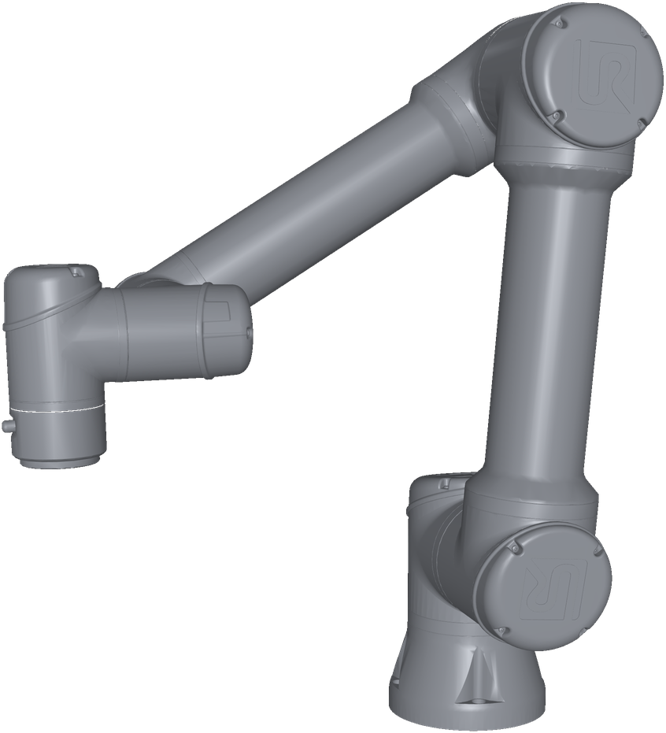
이 설명서에 대하여
| 로봇 | Universal Robots e-Series 협동로봇 (UR3e · UR5e/UR7e · UR10e/UR12e · UR16e) · 컨트롤 박스 · 티치 펜던트. UR15(UR Series)는 1장 사양만 |
| 근거 문서 | WeGo 자료: UR 실습 안내서 · UR ADV 실습 안내서(실습 환경과 풀이 화면), UR ROS 설정 자료(2023-11-10 기준), UR ROS 그리퍼 제어 자료(2023-12-12), UR 페이로드 설정 · 티치 펜던트 비활성화/활성화 지원 문서(2026-08), UR 제품 카탈로그. Universal Robots 공개 자료(이 책에 옮기지 않음, 직접 보십시오): e-Series 사용자 설명서(한국어판 있음) — universal-robots.com/manuals · e-Series 사양 비교표(2026년 10월판) · 지원 문서 «Disable and enable the e-Series teach pendant», Dashboard Server, 클라이언트 인터페이스 — universal-robots.com/articles · URSim 내려받기와 설치 안내 — universal-robots.com/download · UR Academy 교육 — academy.universal-robots.com |
| 실측 자료 | WeGo가 URSim 5.26.3(Docker 이미지 universalrobots/ursim_e-series:5.26.3, UR7e)과 ur_rtde 1.6.5로 확인한 내용(2026-11) |
| 소프트웨어 | PolyScope 5 (화면은 URSim 5.26.3 영어 화면과 WeGo 실습 자료의 한국어 화면) · ROS 2 Humble · ur_rtde 1.6.5 |
| 판 | 한국어판 · 2026.11.18 |
| 문의 | go.support@wego-robotics.com |
본문은 WeGo의 UR 교육 · 지원 자료에서 어느 현장에나 쓰이는 UR 운용 절차만 골라 WeGo 설명서 형식으로 다시 쓴 것입니다. Universal Robots의 사용자 설명서와 UR Academy 교재는 옮기지 않았습니다. 설치 · 배선 · 안전의 전체 내용과 수치는 로봇 모델과 소프트웨어 버전에 맞는 UR 사용자 설명서를 따르십시오. 화면은 PolyScope 5 기준이며, 버전에 따라 이름과 위치가 조금씩 다릅니다.
© WeGo Robotics. Universal Robots, UR, PolyScope, URCap, URSim은 Universal Robots A/S의 상표입니다. 표지의 UR5e 이미지는 Universal Robots가 공개한 ROS 2 설명 패키지의 메시(github.com/UniversalRobots/Universal_Robots_ROS2_Description, git 0eb1a86, BSD-3-Clause)를 MuJoCo로 렌더링한 것이고, 본문 화면은 PolyScope(URSim)와 WeGo 자료의 화면입니다. 1장의 사양은 Universal Robots 사양 비교표와 WeGo 카탈로그에서 옮겼습니다.
목차
- 01시스템 구성과 모델
- 02중요 안전 수칙
- 03설치와 배선 기초
- 04티치 펜던트와 PolyScope
- 05전원 켜기와 끄기
- 06TCP와 페이로드 설정
- 07안전 구성 기초
- 08티치 펜던트 분리와 다시 연결
- 09프로그래밍 기초
- 10URSim 가상 환경
- 11네트워크 · 원격 제어 · ROS
- 12문제 해결
- 부록빠른 참조
시스템 구성과 모델
e-Series 협동로봇은 로봇팔, 컨트롤 박스, 티치 펜던트 세 장치로 이루어집니다. 설정과 프로그래밍은 티치 펜던트의 PolyScope 화면에서 하고, 개발 PC는 이더넷 케이블로 컨트롤 박스에 연결해 원격 제어 · ROS에 씁니다.
구성 장치
| 장치 | 역할 |
|---|---|
| 로봇팔 | 회전 관절 6개(베이스 · 숄더 · 엘보 · 리스트 1 · 리스트 2 · 리스트 3)로 이루어지며, 바닥 · 벽 · 천장 등 어느 방향으로도 설치할 수 있습니다. 끝단 툴 플랜지에 그리퍼 같은 툴을 달고, 툴 I/O 커넥터(M8 8핀)로 툴에 전원과 신호를 줍니다. 툴 플랜지에 힘 · 토크 센서가 들어 있습니다 |
| 컨트롤 박스 | 로봇 제어기입니다. 전원 입력, 이더넷, USB, 디지털 · 아날로그 I/O, 안전 I/O를 갖추고 있으며, 설치 파일과 프로그램이 여기에 저장됩니다 |
| 티치 펜던트 | 12인치 터치스크린으로 PolyScope를 실행합니다. 비상 정지 버튼, 전원 버튼, 뒷면의 프리드라이브 버튼, USB 단자가 있습니다. 표준(Standard) 펜던트와 3단 인에이블 스위치가 달린 3PE 펜던트 두 가지가 있습니다 |
| 개발 PC | 필요할 때만 씁니다. 이더넷으로 컨트롤 박스에 연결해 Dashboard Server · RTDE · ROS 2로 로봇을 다루거나, URSim으로 프로그램을 연습합니다 (10 · 11장) |
모델과 사양 문서
e-Series는 가반 하중과 작업 반경에 따라 모델이 나뉩니다. 아래 값은 Universal Robots e-Series 사양 비교표(2026년 10월판)에서 옮겼습니다. 최신 값은 universal-robots.com의 데이터시트에서 확인하십시오.
| 항목 | UR3e | UR7e (UR5e) | UR12e (UR10e) | UR16e |
|---|---|---|---|---|
| 가반 하중 | 3 kg | 7.5 kg | 12.5 kg | 16 kg |
| 작업 반경 | 500 mm | 850 mm | 1300 mm | 900 mm |
| 무게 (케이블 포함) | 11.2 kg | 20.6 kg | 33.5 kg | 33.1 kg |
| 반복 정밀도 (ISO 9283) | ±0.03 mm | ±0.03 mm | ±0.05 mm | ±0.05 mm |
| 최대 TCP 속도 | 3 m/s | 4 m/s | 4 m/s | 3 m/s |
| 관절 최대 속도 | 베이스 · 숄더 · 엘보 180°/s, 리스트 360°/s | 모든 관절 180°/s | 베이스 · 숄더 120°/s, 나머지 180°/s | 베이스 · 숄더 120°/s, 나머지 180°/s |
| 관절 동작 범위 | ±360° (리스트 3 무한 회전) | ±360° | ±360° | ±360° |
| 최대 소비 전력 | 300 W | 570 W | 615 W | 585 W |
| 툴 I/O 전원 | 600 mA | 1.5 A (2핀) · 1 A (1핀) | 2 A (2핀) · 1 A (1핀) | 2 A (2핀) · 1 A (1핀) |
| 베이스 지름 | Ø128 mm | Ø151 mm | Ø190 mm 미만 | Ø190 mm |
| 소음 | 60 dB(A) 미만 | 65 dB(A) 미만 | 65 dB(A) 미만 | 65 dB(A) 미만 |
| 공통 | 회전 관절 6개 · IP54 · 주위 온도 0 ~ 50 °C · 습도 90 % RH 이하(결로 없음) · 설정 가능한 안전 기능 23개 · EN ISO 13849-1(PLd 카테고리 3) · EN ISO 10218-1 · 툴 플랜지 EN ISO 9409-1-50-4-M6 · 툴 I/O 디지털 입력 2 · 출력 2 · 아날로그 입력 2, 전원 12/24 V · 로봇 케이블 6 m | |||
Universal Robots는 UR5e와 UR10e의 이름을 실제 가반 하중에 맞춰 UR7e(7.5 kg)와 UR12e(12.5 kg)로 바꾸었고, 로봇 자체는 기계적으로 같다고 밝혔습니다. 이미 쓰고 있는 UR5e · UR10e와 그 툴 · 프로그램은 이름 변경의 영향을 받지 않습니다. 최근에는 이름에 작업 반경을 붙이기도 합니다(예: UR7e-920은 7.5 kg · 920 mm). 이 작업 반경 값은 측정 방법이 바뀐 결과이며 팔이 달라진 것은 아닙니다 (Universal Robots 제품 FAQ). WeGo의 예전 교육 자료에 실린 사양표(UR5e 5 kg · UR10e 10 kg)는 이름을 바꾸기 전의 값입니다.
URSim 5.26.3에서 UR7e를 띄우면 UR5와 같은 기구학 파일(urcontrol.conf.UR5)과 UR7e 안전 설정(safety.conf.UR7e)이 쓰입니다.
링크 길이는 a = 0, −0.425, −0.3922 m, d = 0.1625, 0, 0, 0.1333, 0.0997, 0.0996 m로, Universal Robots의 ROS 2 설명 패키지에 있는 UR5e 값과 같습니다.
그래서 UR5e용 시뮬레이션 모델을 UR7e에 그대로 쓸 수 있습니다 (WeGo가 2026-11-12 확인).
UR15 (UR Series)
WeGo가 공급하는 UR Series 중 UR15는 가반 하중 15 kg, 작업 반경 1300 mm, 반복 정밀도 ±0.05 mm, 최대 TCP 속도 5 m/s, IP65, 무게 40.7 kg(케이블 포함)입니다 (WeGo 카탈로그). UR15는 e-Series가 아닌 UR Series 로봇이므로, 이 책의 절차를 쓰기 전에 UR15 사용자 설명서에서 차이를 확인하십시오.
PolyScope 5와 PolyScope X
e-Series 컨트롤 박스는 두 가지 소프트웨어 중 하나로 동작합니다. 사양 비교표 기준으로 CB 5.5는 PolyScope 5, CB 5.6은 PolyScope X를 기본으로 하며, 두 컨트롤 박스 모두 두 소프트웨어와 호환됩니다. 이 책의 화면과 메뉴 이름은 PolyScope 5 기준입니다. PolyScope X는 화면 구성이 다르므로 그에 맞는 사용자 설명서를 보십시오. 로봇의 소프트웨어 버전은 PolyScope 오른쪽 위 메뉴 → About(정보)에서 확인합니다.
중요 안전 수칙
이 장은 WeGo의 UR 자료와 PolyScope 화면이 알려 주는 안전 수칙을 한곳에 모은 것입니다. 로봇 설치와 운용의 안전 요구 사항 전체는 로봇 모델별 UR 사용자 설명서의 안전 장에 있으며, 이 책은 그 내용을 대신하지 않습니다.
PolyScope의 안전 설정 화면은 다음과 같이 경고합니다: 위험성 평가에서 정한 것과 다른 안전 구성 값을 쓰면, 합리적으로 제거되지 않은 위험이나 충분히 줄지 않은 위험이 생길 수 있습니다. 로봇을 셀에 넣기 전에 위험성 평가를 하고, 그 결과대로 안전 구성(7장)을 설정하십시오. 티치 펜던트 없이 운전하는 구성은 따로 위험성 평가를 해야 합니다 (8장).
로봇을 움직이기 전에
- 로봇 동작 범위 안에 사람과 장애물이 없는지 확인하십시오. 로봇을 켤 때 PolyScope도 «로봇을 시작할 때 로봇에서 떨어져 있으십시오»라고 경고합니다 (5장).
- 비상 정지가 눌려 있으면 전원 투입과 브레이크 해제가 되지 않습니다. 비상 정지를 해제한 뒤 시작하십시오.
- 로봇의 설치 방향과 툴(그리퍼)의 길이를 생각해, 실습 · 시운전 전에 충돌이 일어나지 않도록 작업 공간을 구성하십시오.
- 그리퍼와 카메라 케이블이 당겨지거나 감기지 않는 자세 범위인지 확인하십시오.
- 설정 작업(TCP · 페이로드 측정, 안전 구성 변경 등)을 하기 전에는 돌고 있는 공정을 멈추고, 상위 시스템의 자동 운전을 중지하십시오.
- 로봇의 움직임이 확실하지 않으면 PolyScope의 시뮬레이션 모드로 먼저 프로그램을 확인하십시오. 시뮬레이션 모드에서는 로봇팔이 움직이지 않습니다 (9장).
손으로 움직일 때
무거운 툴을 단 상태에서 프리드라이브를 놓는 순간 로봇이 처질 수 있습니다. 무거운 툴, 좁은 공간, 정밀한 자세 조정이 필요하면 프리드라이브 대신 이동 탭의 관절별 제어로 움직이십시오.
페이로드와 TCP
페이로드 값이 실제와 다르면 중력 보상 계산이 어긋나 힘 측정값에 일정한 오차가 실립니다. 그리퍼나 툴 쪽 부품을 바꾸면 페이로드를 다시 설정하십시오. 툴을 떼어 낸 뒤에도 퀵 체인저 같은 부품이 남아 있으면 페이로드는 0이 아닙니다. 프로그램에서 페이로드를 바꿀 때 전환 시간을 0으로 두면 전환 순간에 로봇이 급격하게 반응할 수 있습니다 (6장).
티치 펜던트 없이 운전할 때
티치 펜던트를 떼어 내면 펜던트의 비상 정지 버튼이 없어집니다. 대체 수단 없이 운전하면 비상시 로봇을 멈출 방법이 없으므로, 펜던트를 떼기 전에 외부 비상 정지 장치를 안전 I/O에 배선하고, 실제로 버튼을 눌러 로봇이 멈추는지 확인하십시오. 외부 비상 정지를 구성하지 않은 상태로 운전하지 마십시오 (8장).
원격 제어 · 프로그램으로 움직일 때
- PC 프로그램의 «정지» 버튼은 소프트웨어 정지입니다. 실제 비상 정지는 언제나 티치 펜던트(또는 외부)의 하드웨어 비상 정지 버튼입니다.
- MoveIt 같은 경로 계획 도구로 실제 로봇을 움직일 때는 반드시 먼저 계획(Plan)을 보고, 문제가 없을 때만 실행(Execute)하십시오 (11장).
- 원격 조작이나 스트리밍 제어는 로봇의 현재 자세에서 천천히 시작하고, 처음 실제 로봇으로 돌리기 전에 PolyScope에서 작업대 · 작업자 쪽 안전 평면과 감소 모드 속도 제한을 설정하십시오 (7장).
- URSim에서 잰 응답 지연과 동작은 실제 로봇에서 다를 수 있습니다. 시뮬레이터에서 정한 제어 값(예: servoJ의 lookahead)은 실제 로봇과 실제 입력으로 다시 확인하십시오 (11장).
전기 연결
컨트롤 박스의 디지털 출력은 24 V입니다. 아두이노처럼 낮은 전압을 받는 장치에 연결할 때는 그 장치의 입력 사양에 맞게 전압을 바꾸는 변환기를 거치십시오 (3장).
더 읽을 곳
UR 사용자 설명서(로봇 모델별, 한국어판 있음)의 안전 장, 설치 장, 위험성 평가 안내를 함께 보십시오. 내려받기: universal-robots.com/manuals · universal-robots.com/download. 이 책에서 다루지 않은 안전 기능(관절 제한 값, 정지 시간 · 거리 제한, 3PE 펜던트 운용 등)은 UR 사용자 설명서를 따르십시오.
설치와 배선 기초
이 장은 처음 받은 로봇을 확인하고 I/O를 연결해 신호를 보는 데까지를 다룹니다. 고정 볼트, 케이블 규격, 안전 I/O 배선도 같은 기계 · 전기 설치의 세부 사항은 UR 사용자 설명서의 설치 장을 따르십시오.
받은 장비 확인
e-Series는 두 상자로 나뉘어 옵니다. 한 상자에는 로봇팔이, 다른 상자에는 컨트롤 박스와 티치 펜던트, 케이블, 설명서가 들어 있습니다. 상자의 구성품 목록과 대조해 빠진 것이 없는지 확인하고, 로봇팔의 관절(베이스 · 숄더 · 엘보 · 리스트 1 · 2 · 3)과 툴 플랜지를 살펴보십시오.
설치 방향과 마운팅 설정
로봇팔은 바닥 · 벽 · 천장 등 어느 방향으로도 설치할 수 있습니다. 실제로 설치한 방향과 각도는 PolyScope Installation(설치) → General(일반) → Mounting에 그대로 입력해야 합니다. 마운팅이 올바르게 정의되어 있어야 페이로드 측정 마법사(6장)도 올바른 값을 냅니다. 툴 플랜지는 EN ISO 9409-1-50-4-M6 규격이므로 이 규격의 툴 · 어댑터를 쓸 수 있습니다.
컨트롤 박스 I/O
컨트롤 박스 안의 I/O 단자대는 쓰임새에 따라 색으로 구분되어 있고, PolyScope I/O 탭도 같은 색으로 신호를 보여 줍니다.
| 단자대 색 | 신호 | 비고 |
|---|---|---|
| 노란 바탕 · 빨간 글자 | 안전 신호 | 비상 정지 · 보호 정지 입력 등. 안전 구성(7장)과 함께 씁니다 |
| 노란 바탕 · 검은 글자 | 구성 가능한 I/O | 일반 I/O로 쓰거나 안전 I/O 기능(감소 모드 등)을 할당합니다 |
| 회색 바탕 · 검은 글자 | 디지털 I/O | 센서 · 릴레이 등 일반 디지털 신호 |
| 녹색 바탕 · 검은 글자 | 아날로그 I/O | 전압 또는 전류 신호 |
Universal Robots 사양 비교표 기준으로 컨트롤 박스에는 디지털 입력 16 · 출력 16, 아날로그 입력 2 · 출력 2, 쿼드러처 디지털 입력 4가 있고, I/O 전원은 24 V · 2 A입니다. 로봇팔 끝의 툴 I/O에는 디지털 입력 2 · 출력 2, 아날로그 입력 2가 있으며 툴 전원은 12 V 또는 24 V로 고릅니다.
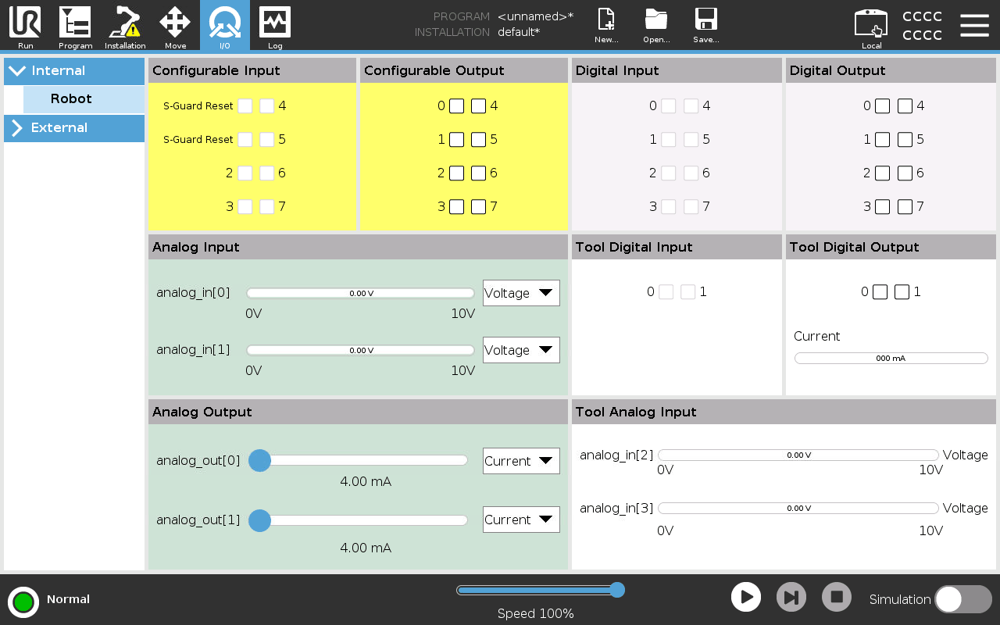
센서를 디지털 입력에 연결해 확인하기
센서 하나를 연결해 신호가 들어오는지 보는 순서입니다. 배선 방식(PNP · NPN, 전원 단자)은 센서 설명서와 UR 사용자 설명서의 I/O 배선 그림을 따르십시오.
- 센서 신호선을 디지털 입력에 연결합니다.예: 센서 출력을 컨트롤 박스의 DI1에 연결합니다.
- 물체가 없을 때 I/O 탭을 봅니다.I/O 탭의 Digital Input(디지털 입력) 1에 신호가 없는지 확인합니다.
- 물체를 센서 앞에 놓고 다시 봅니다.디지털 입력 1의 표시가 켜지면 배선이 맞습니다.
- 신호에 이름을 붙입니다.Installation → General → I/O Setup에서 입력 이름을 바꾸면(예: Sensor_1) 프로그램을 읽기 쉬워집니다.
툴 I/O와 그리퍼
그리퍼는 툴 플랜지에 달고 케이블을 툴 커넥터(M8 8핀)에 연결합니다. 그리퍼를 다루는 방법은 제품마다 다릅니다.
URCap(PolyScope 확장 프로그램)을 함께 주는 그리퍼는 URCap을 설치한 뒤 프로그램 노드로 열고 닫으며 (9 · 11장),
디지털 신호로 움직이는 그리퍼는 tool_out[0] 같은 툴 출력을 켜고 끄는 방식이 그리퍼마다 다르므로 그리퍼 설명서를 확인하십시오.
툴 출력을 바꾸는 Set(지정) 노드 다음에는 Wait(기다림) 노드를 넣으십시오. WeGo 교재의 예제는 런타임 오류를 막으려고 출력 다음에 짧은 기다림(0.01 ~ 0.5초)을 넣습니다.
출력 신호로 다른 장치 움직이기
컨트롤 박스의 디지털 출력은 24 V입니다. WeGo 교재의 컨베이어 예제처럼 아두이노 같은 저전압 보드로 신호를 받을 때는, 보드의 입력 사양에 맞는 전압으로 바꾸는 변환기를 거쳐 연결하십시오. 이때 컨트롤 박스의 0 V를 보드의 접지와 함께 연결합니다.
로봇 프로그램이 멈추면 출력이 연결된 장치(예: 컨베이어)도 멈추게 할 수 있습니다. Installation → General → I/O Setup에서 그 출력을 고르고, 프로그램이 실행 중이 아닐 때의 동작을 «낮음»(Low)으로 정하십시오.
티치 펜던트와 PolyScope
PolyScope는 티치 펜던트에서 실행되는 UR의 그래픽 사용자 화면입니다. 위쪽 머리띠의 탭으로 화면을 바꾸고, 아래쪽 띠에서 로봇 상태 · 속도 · 프로그램 실행을 다룹니다. 이 책은 영어 화면(URSim)과 한국어 화면(WeGo 실습 자료)을 함께 싣고, 메뉴 이름은 «영어(한국어)»로 적습니다.
화면 구성
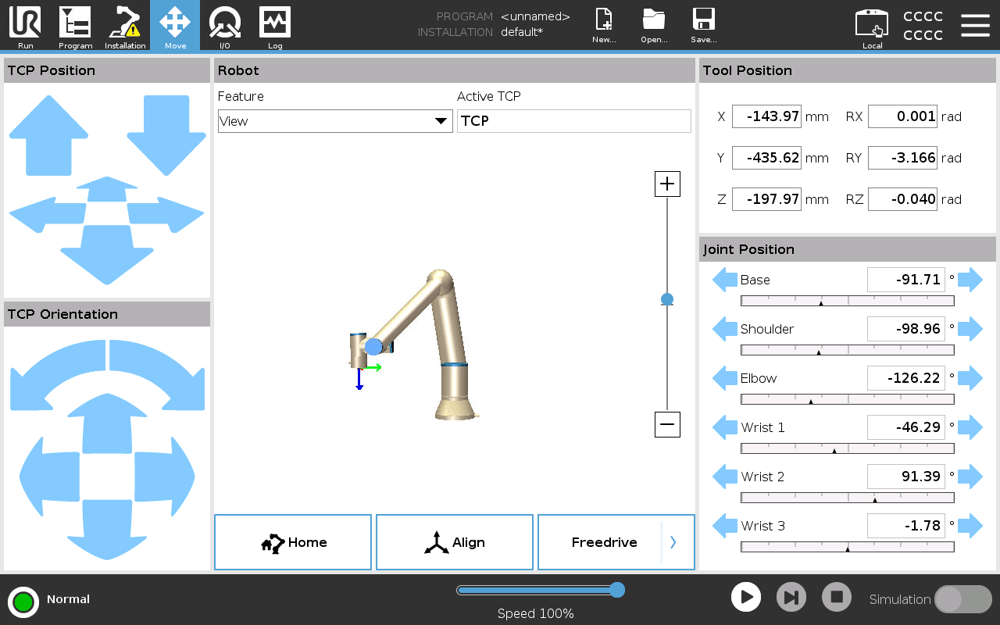
| 영어 (한국어) | 하는 일 |
|---|---|
| Run (실행) | 불러온 프로그램을 실행하고 상태를 봅니다 |
| Program (프로그램) | 프로그램 트리를 만들고 고칩니다 (9장) |
| Installation (설치) | TCP · 페이로드 · 마운팅 · I/O 설정 · 안전 구성 · 특징 좌표 · URCap 설정 등 로봇 셀의 설정을 정합니다 (6 · 7장) |
| Move (이동) | 화살표로 TCP를 움직이거나 관절을 하나씩 돌리고, 프리드라이브 · 홈 · 정렬을 씁니다 |
| I/O | 컨트롤 박스와 툴의 입출력을 보고 바꿉니다 (3장) |
| Log (로그) | 로봇 상태와 오류 기록을 봅니다 |
| New · Open · Save (신규 · 열기 · 저장) | 프로그램과 설치 파일을 만들고 불러오고 저장합니다. 머리띠 가운데에 지금 프로그램과 설치 파일의 이름이 보입니다 |
| Local / Remote 아이콘 | 로컬 제어와 원격 제어를 바꿉니다. 원격 제어 기능을 켜야 나타납니다 (11장) |
| 운영 모드 아이콘 | 운영 모드 비밀번호를 정하면 지금 운영 모드(수동 · 자동)가 표시됩니다 |
| 메뉴 (오른쪽 위 세 줄 아이콘) | Help(도움말) · About(정보: 소프트웨어 버전, 일련번호, IP 주소) · Settings(설정) · Shutdown Robot(로봇 종료) |
| 항목 | 하는 일 |
|---|---|
| 상태 버튼 | 빨간색(Power off) · 노란색(Idle) · 녹색(Normal)으로 로봇 상태를 보여 줍니다. 누르면 초기화 화면이 열립니다 (5장) |
| Speed (속도) 슬라이더 | 프로그램 실행 속도의 비율을 정합니다 |
| 실행 · 한 단계 · 정지 | 프로그램을 시작 · 한 단계씩 실행 · 정지합니다 |
| Simulation (시뮬레이션) | 켜면 로봇팔은 움직이지 않고 화면의 3D 모델만 프로그램대로 움직입니다 |
이동 탭
이동 탭에서는 왼쪽의 TCP Position · TCP Orientation 화살표로 TCP를 직선 · 회전 이동하고, 오른쪽의 Joint Position(관절 위치)에서 관절을 하나씩 돌립니다. Feature(특징)에서 기준 좌표(베이스 · 툴 · 보기 · 사용자 특징 좌표)를 고르면 화살표가 그 좌표계 방향으로 움직입니다. Freedrive(프리드라이브)를 누르고 있으면 손으로 로봇을 움직일 수 있으며, 티치 펜던트 뒷면의 프리드라이브 버튼도 같은 일을 합니다. 프리드라이브 패널에서는 축별로 자유도를 묶을 수 있습니다.
설치 파일과 프로그램
PolyScope는 두 종류의 파일을 다룹니다. 설치 파일에는 TCP, 페이로드, 마운팅, I/O 설정, 안전 구성, 특징 좌표, 설치 변수처럼 로봇 셀에 딸린 설정이 들어 있고,
프로그램(.urp)에는 동작 순서가 들어 있습니다. 설치 탭에서 바꾼 값은 설치 파일을 저장해야 남습니다. 저장하지 않으면 다시 켤 때 값이 사라집니다.
설정 메뉴
메뉴 → Settings(설정)에는 다음 항목이 있습니다 (PolyScope 5.26).
| 항목 | 내용 |
|---|---|
| Preferences | Language(언어: 화면과 키보드, 바꾸면 Apply and Restart로 다시 시작) · Run Screen · Time |
| Password | 운영 모드(Mode) 비밀번호와 안전(Safety) 비밀번호 |
| System | System Backup · Licenses · URCaps(설치 · 제거, 11장) · Remote Control(11장) · Constrained Freedrive · Network(11장) · Update |
| Security | 보안 관련 설정 |
운영 모드와 제어 모드
이름이 비슷한 두 상태를 구분해야 합니다. 둘 다 안전 구성 변경, 티치 펜던트 분리(8장), 원격 제어(11장)에 관여합니다.
| 구분 | 값 | 뜻 |
|---|---|---|
| 운영 모드 | 수동 / 자동 | 안전 구성 변경과 프로그램 편집을 허용할지 정합니다. 자동 모드에서는 미리 정한 프로그램만 실행할 수 있고, 프로그램과 설치를 고치거나 저장할 수 없으며 안전 설정도 잠금 해제할 수 없습니다 |
| 제어 모드 | 로컬 / 원격 | 명령을 티치 펜던트에서 받을지 외부(소켓 · I/O · Dashboard Server)에서 받을지 정합니다. 원격 제어에서는 이동 탭의 로봇 이동, 프리드라이브, 티치 펜던트에서의 프로그램 시작이 제한됩니다 |
전원 켜기와 끄기
컨트롤 박스를 켜면 PolyScope가 뜨지만 로봇팔은 아직 꺼져 있습니다. 초기화 화면에서 팔에 전원을 넣고(ON) 브레이크를 풀어야(START) 로봇을 움직일 수 있습니다.
켜기 실측
- 안전 조건을 확인합니다.로봇 동작 범위 안에 사람과 장애물이 없는지, 비상 정지가 풀려 있는지 확인합니다. 비상 정지가 눌려 있으면 전원 투입과 브레이크 해제가 되지 않습니다.
- 컨트롤 박스를 켭니다.티치 펜던트를 컨트롤 박스에 연결하고 티치 펜던트의 전원 버튼을 누릅니다. PolyScope가 다 뜰 때까지 기다립니다.
- 초기화 화면을 엽니다.왼쪽 아래의 빨간 상태 버튼(Power off)을 누릅니다.
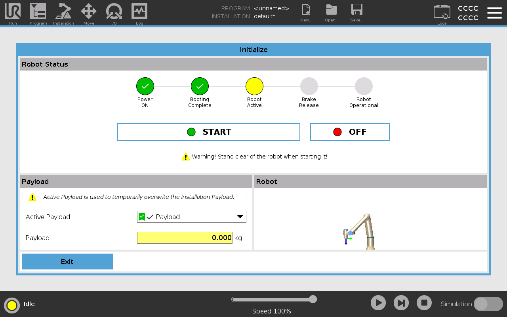
그림 4. 초기화 화면. ON을 누른 뒤 Robot Active 상태에서 START로 브레이크를 풉니다 (URSim 5.26.3) - 설치와 페이로드를 확인하고 ON을 누릅니다.화면은 «설치와 페이로드가 맞는지 확인하고 ON을 눌러 시작하라»고 안내합니다. ON을 누르면 Power ON → Booting Complete → Robot Active로 넘어가고, 상태 버튼이 노란색(Idle)이 됩니다.
- 로봇에서 떨어져 START를 누릅니다.화면에 «로봇을 시작할 때 로봇에서 떨어져 있으십시오»라는 경고가 나옵니다. START를 누르면 브레이크가 풀리고, 모든 단계가 녹색이 되며 상태 버튼이 녹색(Normal)이 됩니다.
- Exit로 초기화 화면을 닫습니다.이제 이동 탭과 프로그램을 쓸 수 있습니다.
WeGo 지원 문서(PolyScope 5.22 기준)는 마지막 단계를 «Robot Operational»으로 적었고, URSim 5.26.3 화면에는 «Robot in Normal Mode»로 나옵니다. 같은 상태이며 소프트웨어 버전에 따라 이름만 다릅니다.
Active Payload
초기화 화면 왼쪽 아래의 Active Payload는 설치 탭에 저장된 페이로드를 일시적으로 덮어쓰는 값입니다. 화면에도 «Active Payload는 설치 페이로드를 일시적으로 덮어쓰는 데 쓰인다»고 적혀 있습니다. 페이로드를 측정하거나 고칠 때는 이 값을 건드리지 말고 설치 탭의 페이로드 구성(6장)을 기준으로 작업하십시오.
PC에서 켜기
원격 제어(11장)를 켜 두면 개발 PC에서 Dashboard Server(포트 29999)로 같은 순서를 실행할 수 있습니다. WeGo가 URSim에서 쓰는 순서는 다음과 같습니다.
- 포트 29999가 열릴 때까지 기다립니다.PolyScope가 아직 뜨는 중이면 연결이 거부됩니다. 몇 초 간격으로 다시 시도하십시오.
power on을 보냅니다.robotmode의 응답이IDLE이 될 때까지 기다립니다.brake release를 보냅니다.robotmode의 응답이RUNNING이 되면 준비가 끝났습니다.safetystatus로 안전 상태도 확인합니다.
Dashboard 명령의 목록과 사용법은 11장과 부록에 있습니다.
끄기
- 프로그램을 멈추고 로봇을 안전한 자세로 둡니다.설치나 프로그램을 바꿨다면 먼저 저장합니다.
- 메뉴 → Shutdown Robot(로봇 종료)을 누릅니다.화면의 안내에 따라 종료합니다.
- 케이블 작업은 완전히 꺼진 뒤에 합니다.티치 펜던트 케이블처럼 컨트롤 박스에 연결된 케이블은 로봇이 완전히 종료된 뒤에 분리하십시오 (8장).
TCP와 페이로드 설정
툴을 달면 TCP(툴 기준점)와 페이로드(툴의 질량 · 무게중심)를 로봇에 알려야 합니다. TCP는 위치 정확도에, 페이로드는 중력 보상과 힘 측정에 바로 영향을 줍니다. 툴이나 툴 쪽 부품을 바꿀 때마다 이 장의 절차를 다시 하십시오.
준비
- 실제 운전에 쓰는 구성 그대로 툴을 다십시오. 카메라 브래킷, 케이블 고정구, 흡착 컵처럼 툴 쪽에 붙는 부품을 빠뜨리면 측정값이 실제와 달라집니다.
- TCP · 페이로드 측정은 티치 펜던트에서 로봇을 직접 움직여야 하므로 로컬 제어 · 수동 모드에서 합니다. 원격 제어로 운전하던 로봇은 먼저 바꾸고(4 · 11장), 작업이 끝나면 되돌리십시오.
- 로봇이 서로 다른 네 자세로 움직일 수 있는 빈 공간을 확보하십시오 (2장).
TCP란
TCP(Tool Center Point)는 툴의 기준점입니다. 툴 출력 플랜지 중심을 기준으로 한 위치 X · Y · Z와 자세 RX · RY · RZ, 모두 여섯 값으로 정의하며, 여섯 값이 모두 0이면 TCP는 플랜지 중심과 같습니다. 웨이포인트로 돌아가라고 하면 로봇은 TCP를 그 위치와 자세로 옮기고, 직선 이동에서는 TCP가 직선으로 움직입니다. 그래서 TCP가 어긋나면 모든 이동 목표에 같은 크기의 오차가 더해집니다.
TCP를 정하는 방법
| 방법 | 쓰는 경우 | 특성 |
|---|---|---|
| 제조사 공표값 | 규격 툴을 플랜지 축에 맞춰 그대로 단 경우 | 가장 먼저 검토합니다. 단, 공표값의 기준점이 플랜지가 아닐 수 있으므로(퀵 체인저 높이 등) 기준점을 확인하십시오 |
| 실측 · 적층 계산 | 여러 부품을 겹쳐 달았거나 핑거팁 · 흡착 컵이 표준과 다른 경우 | 기준면을 명확히 잡아야 합니다 |
| 임의 값 지정 | 공정상 기준점을 툴 끝이 아닌 곳에 두어야 하는 경우 | 정한 근거를 함께 기록합니다 |
| TCP 위치 티칭 | 툴이 비스듬히 달려 X · Y나 회전 값을 알 수 없는 경우 | 사람이 포인트를 맞추는 방식이라 오차가 생깁니다 |
규격 툴을 축에 맞춰 달았다면 모르는 값은 플랜지에서 툴 끝까지의 Z 거리 하나뿐이고, 이 경우 공표값이나 실측이 티칭보다 정확합니다. 공표값은 그대로 넣기보다 계산 결과를 검산하는 기준으로 쓰십시오. 계산값이 공표값과 크게 다르면 빠뜨린 부품이 있다는 뜻입니다.
TCP 입력
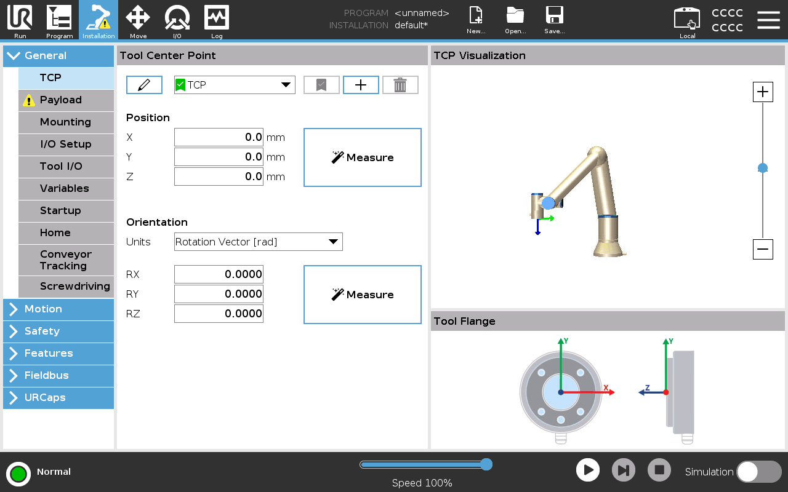
- Installation(설치) → General(일반) → TCP를 엽니다.툴 센터 포인트 화면이 열립니다.
- 위치와 자세를 넣습니다.위치 X · Y · Z는 mm, 자세는 기본이 회전 벡터(rad)이며 Units에서 단위를 바꿀 수 있습니다. 값을 이미 알면 티칭 없이 바로 넣습니다.
- 필요하면 TCP를 더 만듭니다.드롭다운 옆 버튼으로 새 TCP를 고유한 이름으로 추가 · 이름 변경 · 제거합니다. 마지막 하나는 제거할 수 없습니다.
- 기본 TCP를 정하고 설치를 저장합니다.원하는 TCP를 고르고 기본값으로 설정합니다. 드롭다운의 녹색 아이콘이 기본 TCP입니다.
| 구분 | 내용 |
|---|---|
| 활성 TCP | 직선 이동에서 로봇이 TCP 오프셋을 정할 때 쓰는 TCP입니다. 프로그램 실행 중에 이동 노드나 Set 노드로 바꿀 수 있습니다 |
| 기본 TCP | 프로그램을 실행하기 전에 활성 TCP로 지정되는 TCP입니다 |
TCP 위치 티칭
값을 알 수 없을 때만 씁니다. 위치 옆의 Measure(측정)를 누르면 시작됩니다.
- 작업 영역에 고정된 포인트를 정합니다.뾰족한 핀을 세워 두면 좋습니다.
- 최소 세 가지 각도에서 TCP를 그 포인트에 맞추고 위치를 저장합니다.화면 오른쪽의 위치 화살표로 움직입니다. 각도를 충분히 벌리십시오.
- 결과를 확인하고 설정을 눌러 TCP에 적용합니다.
저장한 위치가 충분히 다르지 않으면 버튼 위의 LED가 빨간색이 됩니다. 각 포인트의 품질은 녹색 · 노란색 · 빨간색 LED로 표시됩니다. 세 위치면 대체로 TCP를 정할 수 있지만, 네 번째 위치를 쓰면 계산이 맞는지 한 번 더 확인할 수 있습니다.
티칭 결과는 사람이 같은 포인트를 반복해서 맞추는 정확도에 좌우됩니다. 각도 차이가 작으면 계산이 불안정해져 맞추는 오차가 몇 배로 커집니다. 툴 끝이 뾰족하지 않으면 뾰족한 지그를 붙여 측정하십시오. LED가 모두 녹색이어도 결과를 그대로 쓰지 말고, 공표값이나 계산값과 대조해 차이가 크면 다시 티칭하십시오.
TCP 자세 티칭
자세는 위치와 따로 잡습니다. 자세 옆의 Measure를 누르고 기준이 될 특징 좌표(예: 베이스)를 고른 뒤, 포인트 설정을 누르고 툴 화살표로 툴 자세가 그 좌표계와 일치하는 위치로 움직입니다. 계산된 자세를 확인하고 설정을 누릅니다. 툴을 플랜지 축에 맞춰 달았다면 자세 값은 모두 0이므로 이 과정이 필요 없습니다.
TCP를 정하고 공정을 구성해 잡는 위치와 보정 값을 정했다면, 그 값들은 모두 그 TCP를 기준으로 만들어진 것입니다. 나중에 TCP만 더 정확한 값으로 바꾸면 기준이 함께 움직여 오히려 정확도가 떨어질 수 있습니다. 부득이하게 바꿀 때는 TCP 변경, 공정 보정 값 재계산, 시험을 한 묶음으로 하십시오 (WeGo 현장 경험). 그리퍼를 다른 개체로 바꾸었을 때, 핑거팁 · 흡착 컵 모양을 바꾸었을 때, 브래킷이나 퀵 체인저 어댑터를 바꾸었을 때, 충돌 뒤 툴 변형이 의심될 때는 TCP를 다시 확인하십시오.
페이로드 측정
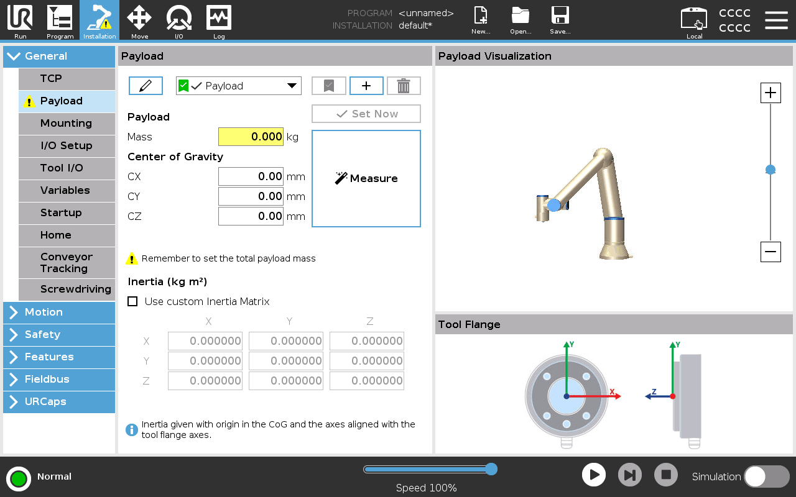
Installation → General → Payload(페이로드) 화면에는 페이로드 구성 목록, 질량(kg), 무게중심 CX · CY · CZ(mm), 관성 항목과 Measure(측정) 버튼이 있습니다. 페이로드 구성을 여러 개 만들어 두고 프로그램 중에 바꿀 수 있습니다. 툴을 바꾸는 셀이라면 툴 상태마다(툴 없음 · 툴 A · 툴 B …) 구성을 하나씩 만들고, 이름을 툴 이름과 맞춰 두면 관리하기 쉽습니다.
| 버튼 | 동작 |
|---|---|
| + (추가) | 새 페이로드 구성을 추가합니다. 이름은 겹칠 수 없습니다 |
| 연필 (이름 변경) | 고른 구성의 이름을 바꿉니다 |
| 휴지통 (삭제) | 고른 구성을 지웁니다. 마지막 하나는 지울 수 없습니다 |
| Set Now (지금 설정) | 고른 구성을 지금의 활성 페이로드로 지정합니다. 드롭다운의 체크 표시가 활성 페이로드입니다 |
| 기본값으로 설정 | 프로그램 시작 전에 적용될 기본 페이로드로 지정합니다. 드롭다운의 녹색 아이콘이 기본 페이로드입니다 |
측정 마법사
- 페이로드 화면에서 Measure를 누릅니다.페이로드 추정 마법사가 시작됩니다. Next(다음)를 누릅니다.
- 마법사가 안내하는 네 가지 위치로 로봇을 옮깁니다.각 위치에서 페이로드의 하중이 측정됩니다. 이동 탭의 관절별 제어나 프리드라이브로 옮깁니다.
- 결과를 확인하고 Finish(완료)를 누른 뒤 설치를 저장합니다.화면을 닫기 전에 질량과 무게중심 세 값을 기록해 두십시오.
- 네 위치의 TCP 위치가 서로 최대한 다르게 하십시오. 비슷한 자세를 반복하면 무게중심 오차가 커집니다.
- 측정은 짧은 시간 안에 끝내고, 측정 전과 측정 중에 툴이나 페이로드를 손으로 당기지 마십시오.
- 설치의 마운팅(3장)이 올바르게 정의되어 있어야 합니다.
관성은 따로 정하지 않으면 지정한 질량과 밀도 1 g/cm³인 구의 관성으로 계산된 기본값이 쓰입니다. 정밀한 관성이 필요할 때만 Use custom Inertia Matrix를 골라 IXX · IYY · IZZ · IXY · IXZ · IYZ를 넣습니다. 관성은 페이로드 무게중심을 원점으로 하고 툴 플랜지 축과 나란한 좌표계로 정합니다.
측정 결과는 티치 펜던트 안에만 저장되며 PC 쪽 설정 파일과 자동으로 연결되지 않습니다. ROS · RTDE 프로그램의 설정 파일에 옮겨 적을 때는 단위를 확인하십시오.
티치 펜던트의 CX · CY · CZ는 mm이고 RTDE의 setPayload 같은 API는 보통 m를 씁니다. mm 값을 그대로 넣으면 무게중심이 1000배로 들어갑니다.
부호는 화면에 보이는 그대로 옮기고, 무게중심은 툴 플랜지 좌표계 기준이므로 축 순서를 바꾸지 마십시오.
프로그램에서 페이로드 바꾸기
집은 물체를 놓는 등 실행 중에 페이로드가 바뀌면 Program → Basic → Set Payload(페이로드 설정) 노드를 씁니다. 미리 정한 페이로드 구성을 고르거나 질량 · 무게중심을 직접 넣을 수 있고, Set Now를 누르면 그 값이 바로 활성 페이로드가 됩니다. 전환 지속 시간은 페이로드가 바뀔 때 값이 반영되는 시간입니다. 0으로 두면 전환 순간에 로봇이 급격하게 반응할 수 있으므로, 무거운 물체를 다루거나 진공 그리퍼로 물체를 놓는 구간처럼 하중이 갑자기 바뀌는 곳에는 전환 시간을 주십시오.
툴을 바꿀 때마다 그 툴의 TCP와 페이로드를 다시 적용하십시오. 다시 적용하지 않으면 로봇은 이전 툴의 값을 계속 씁니다. 점검표는 부록에 있습니다.
안전 구성 기초
안전 구성은 로봇의 힘 · 속도 · 위치를 제한하는 값과 안전 I/O 기능의 모음이며, 설치 파일에 저장됩니다. 이 장은 화면 구성과 자주 쓰는 설정의 순서를 보여 줍니다. 어떤 값을 쓸지는 위험성 평가로 정하고, 각 기능의 정확한 뜻과 한계는 UR 사용자 설명서의 안전 구성 장을 따르십시오.
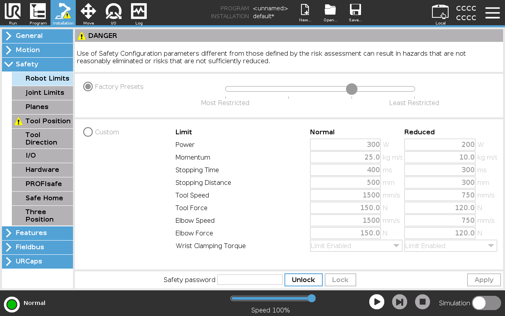
안전 구성의 항목
| 항목 | 내용 |
|---|---|
| Robot Limits (로봇 제한) | TCP와 로봇의 힘 · 파워 · 운동량 · 속도 · 정지 시간 · 정지 거리 제한. 공장 기본 단계(Most Restricted ~ Least Restricted) 중에서 고르거나 Custom으로 직접 정합니다. 값은 정상(Normal) 모드와 감소(Reduced) 모드에 따로 있습니다. 사람이나 주변과 부딪힐 위험이 높으면 낮은 값을, 낮으면 높은 값을 씁니다 |
| Joint Limits (관절 제한) | 관절별 최대 속도와 허용 위치 범위 |
| Planes (평면) | 안전 평면으로 TCP가 머물 수 있는 작업 영역을 제한합니다 (경계) |
| Tool Position · Tool Direction | 툴의 위치와 방향 제한 |
| I/O | 구성 가능한 입출력에 안전 기능(비상 정지, 감소 모드 등)을 할당합니다 |
| Hardware | 연결된 티치 펜던트 종류(No · Standard · 3PE) 등 하드웨어 선택 (8장) |
| PROFIsafe · Safe Home · Three Position | 필드버스 안전, 안전 홈 자세, 3단 인에이블 장치 설정 |
잠금 해제와 적용
- 수동 모드인지 확인합니다.자동 모드에서는 안전 설정을 잠금 해제할 수 없습니다.
- 안전 비밀번호를 정합니다 (처음 한 번).메뉴 → Settings → Password에서 안전(Safety) 비밀번호를 정합니다.
- 잠금을 풉니다.Installation → Safety의 아무 화면에서 아래쪽 Safety password 칸에 비밀번호를 넣고 Unlock을 누릅니다.
- 값을 바꾸고 Apply(적용)를 누릅니다.적용을 누르지 않으면 반영되지 않습니다. 적용 뒤 Lock으로 다시 잠그고 설치 파일을 저장합니다.
감소 모드를 안전 I/O로 켜기
예: 작업자가 영역에 들어오면 안전 스캐너가 신호를 주고, 로봇이 감소 모드(낮은 제한 값)로 움직이게 합니다.
- 스캐너를 지키려는 영역에 두고 컨트롤 박스의 구성 가능한 입력에 연결합니다.안전 입력의 배선은 UR 사용자 설명서의 안전 I/O 배선을 따르십시오. I/O 탭에서 신호가 들어오는지 확인합니다.
- 안전 구성을 잠금 해제하고 Safety → I/O를 엽니다.
- 연결한 입력에 감소 모드 기능을 할당하고 적용합니다.이제 그 입력에 신호가 들어오면 로봇은 감소 모드의 제한 값으로 움직입니다.
안전 평면으로 작업 영역 제한하기
예: 로봇이 작업자 쪽으로 넘어오지 못하게 가상의 벽을 세웁니다.
- 특징 좌표를 만듭니다.Installation → Features(특징)에서 포인트(또는 평면)를 추가하고, 벽을 세울 자리로 TCP를 옮겨 티칭합니다.
- 안전 구성을 잠금 해제하고 Safety → Planes를 엽니다.
- 평면을 추가하고 1단계의 특징을 복사해 위치를 정합니다.평면이 언제 적용될지(정상 모드 · 감소 모드 · 둘 다)를 고릅니다. 항상 지키려면 둘 다를 고릅니다.
- 적용하고 결과를 확인합니다.적용을 누르면 안전 구성 화면에 평면이 표시됩니다. 위치가 의도한 곳인지 확인하고 설치 파일을 저장합니다.
PC에서 로봇을 실시간으로 움직이는 시스템(원격 조작 등)을 처음 실제 로봇으로 돌리기 전에, WeGo는 PolyScope에서 작업대와 작업자 쪽 안전 평면, 감소 모드 속도 제한을 먼저 설정합니다. PC 프로그램 쪽의 작업 영역 제한 · 관절 속도 제한은 이와 별도로 둡니다.
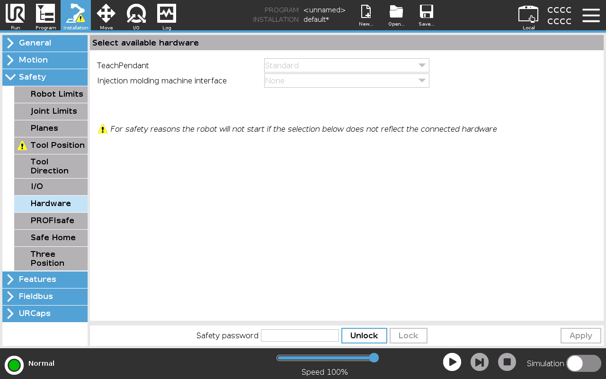
티치 펜던트 분리와 다시 연결
e-Series 컨트롤 박스는 기본적으로 티치 펜던트를 연결한 상태로 운전하도록 설정되어 있습니다. 펜던트를 떼고 운전하려면 안전 구성의 하드웨어 설정을 함께 바꿔야 하며, 설정을 바꾸지 않고 떼면 로봇이 시작되지 않습니다. 소프트웨어 5.1.0 이상의 e-Series에 해당하며, CB-Series는 절차가 다릅니다.
티치 펜던트를 비활성화하면 외부 비상 정지를 반드시 구성해야 합니다. 펜던트의 비상 정지 버튼이 없어지므로, 대체 수단 없이 운전하면 비상시 로봇을 멈출 방법이 없습니다. 펜던트 없이 운전하는 구성은 따로 위험성 평가를 하십시오.
준비할 것
| 항목 | 확인 내용 |
|---|---|
| 운영 모드 | 안전 구성을 바꾸려면 수동 모드여야 합니다 (4장) |
| 안전 비밀번호 | 안전 구성을 잠금 해제하는 데 필요합니다 |
| 펜던트 종류 | 표준(Standard) 펜던트인지 3PE 펜던트인지 기록해 둡니다. 다시 연결할 때 같은 항목을 골라야 합니다 |
| 외부 비상 정지 | 펜던트를 떼기 전에 외부 비상 정지의 배선과 동작을 준비합니다 |
| 외부 전원 버튼 | 펜던트의 전원 버튼을 쓸 수 없으므로 원격 ON / OFF 수단을 준비합니다 |
| 위험성 평가 | 펜던트 없이 운전하는 구성을 평가합니다 |
펜던트 비활성화
3단계까지는 펜던트를 연결하고 로컬 제어 상태에서 합니다.
- 원격 제어 기능을 켭니다.메뉴 → Settings → System → Remote Control에서 Enable(사용)을 누릅니다. 화면 오른쪽 위에 펜던트 아이콘이 나타납니다. 이 기능을 켜는 것만으로는 원격 제어로 바뀌지 않습니다.
- 하드웨어 설정을 No로 바꿉니다.Installation → Safety → Hardware에서 안전 비밀번호로 잠금을 풀고, TeachPendant 드롭다운에서 No를 고른 뒤 Apply를 누릅니다.
- 원격 제어로 바꿉니다.오른쪽 위 펜던트 아이콘을 누르고 Remote Control을 고릅니다. 아이콘 표시가 바뀌면 이제 펜던트 없이 로봇을 제어할 수 있습니다. 확인한 뒤 로봇을 종료합니다.
- 로봇이 완전히 꺼진 뒤 펜던트 케이블을 뗍니다.분리 방법은 UR 서비스 설명서의 티치 펜던트 교체 절차를 따르십시오.
- 외부 비상 정지를 배선하고 시험합니다.외부 비상 정지 장치를 안전 I/O에 배선합니다(UR 사용자 설명서의 안전 I/O). 배선 뒤에는 실제로 버튼을 눌러 로봇이 멈추는지 확인합니다.
- 원격 ON / OFF 버튼을 배선합니다.원격 ON과 원격 OFF 입력을 배선합니다(UR 사용자 설명서의 원격 ON/OFF 제어).
| 선택값 | 뜻 |
|---|---|
| No | 티치 펜던트를 연결하지 않고 운전합니다 |
| Standard | 표준 티치 펜던트를 연결해 운전합니다 |
| 3PE Enabled | 3PE 티치 펜던트를 연결해 운전합니다 |
선택값이 실제로 연결된 하드웨어와 다르면 안전상의 이유로 로봇이 시작되지 않고, 오류 코드 C283이 납니다 (그림 8). 펜던트를 뗀 상태에서도 컨트롤 박스에 일반 모니터와 키보드 · 마우스를 연결하면 PolyScope 화면을 쓸 수 있습니다.
펜던트 다시 연결
- 펜던트를 컨트롤 박스에 연결합니다.UR 서비스 설명서의 티치 펜던트 교체 절차를 따릅니다.
- 로컬 제어로 바꿉니다.화면 위쪽 아이콘을 눌러 원격 제어를 로컬 제어로 바꿉니다.
- 하드웨어 설정을 되돌립니다.수동 모드에서 Installation → Safety → Hardware의 잠금을 풀고, 연결한 펜던트에 맞춰 Standard 또는 3PE Enabled를 고른 뒤 Apply를 누릅니다.
- 운영 모드를 Dashboard로 바꿨다면 되돌립니다.
clear operational mode를 보내 운영 모드 제어를 펜던트에 돌려줍니다 (11장).
이 절차는 Universal Robots 지원 문서 «Disable and enable the e-Series teach pendant»(universal-robots.com/articles)를 바탕으로 WeGo가 현장용으로 정리한 것입니다. 화면 그림과 원문은 그 문서를 보십시오. 점검표는 부록에 있습니다.
프로그래밍 기초
PolyScope 프로그램은 왼쪽 노드 목록에서 명령을 골라 가운데 프로그램 트리에 쌓아 만듭니다. 이 장은 노드의 종류, 웨이포인트와 이동 방식, I/O 명령을 정리하고, WeGo 실습 안내서의 풀이 화면으로 사각 경로 · 블렌드 · MoveP · 그리퍼 집기 예제를 따라 합니다. 처음에는 URSim(10장)이나 시뮬레이션 모드에서 연습하십시오.
프로그램 탭
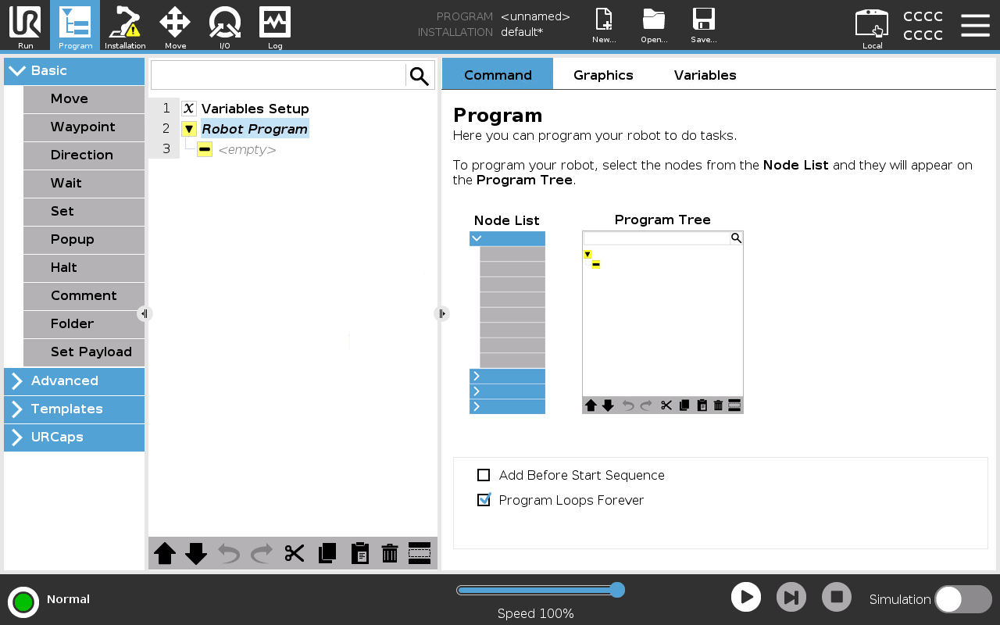
| 영어 (한국어) | 하는 일 |
|---|---|
| Move (이동) | 아래에 딸린 웨이포인트 사이를 어떻게 움직일지(MoveJ · MoveL · MoveP)와 공통 속도 · 가속도, 기준 특징 좌표, TCP를 정합니다 |
| Waypoint (웨이포인트) | 로봇이 지나갈 목표 위치입니다. 반드시 Move 노드 아래에 있어야 합니다 |
| Direction (방향) | 정한 방향으로 TCP를 움직입니다 |
| Wait (기다림) | 시간, 디지털 · 아날로그 입력, 식이 참이 될 때까지 기다립니다 |
| Set (지정) | 디지털 · 아날로그 출력, 식, 한 번 펄스, 변수 증가, 총 페이로드, TCP를 바꿉니다 |
| Popup (팝업) | 화면에 메시지 · 경고 · 오류 창을 띄웁니다. 변수를 함께 보여 줄 수도 있습니다 |
| Halt | 프로그램 실행을 멈춥니다 |
| Comment (주석) | 프로그램 트리에 설명을 붙입니다. 실행에는 영향이 없습니다 |
| Folder (폴더) | 여러 노드를 묶어 프로그램을 읽기 쉽게 정리합니다 |
| Set Payload (페이로드 설정) | 실행 중에 페이로드를 바꿉니다 (6장) |
Advanced(고급)에는 Loop(반복), SubProgram(서브 프로그램), Assignment(할당), If(조건), Switch, Thread(스레드), Script 같은 흐름 제어 노드가, Templates(템플릿)에는 팔레타이징 같은 마법사가, URCaps에는 설치한 URCap(그리퍼 · External Control 등)의 노드가 있습니다. 프로그램 트리 아래쪽 버튼으로 노드를 위아래로 옮기고, 되돌리기 · 잘라내기 · 복사 · 붙여넣기 · 삭제 · 감추기(suppress)를 합니다.
웨이포인트와 이동 방식
웨이포인트는 목표 위치를, Move 노드는 그 목표로 가는 궤적을 정합니다.
| 방식 | 궤적 | 쓰는 곳 |
|---|---|---|
| MoveJ | 관절 공간에서 계산합니다. 모든 관절이 동시에 목표 각도로 가며, TCP 궤적은 직선이 아닙니다. 가장 빠릅니다. 속도 단위 °/s | 장애물이 없는 넓은 공간의 빠른 이동 |
| MoveL | TCP가 웨이포인트 사이를 직선으로 움직입니다. 속도 단위 mm/s | 집기 · 놓기 직전의 접근 · 이탈, 직선이 필요한 작업 |
| MoveP | TCP를 일정한 속도로 직선 이동하며, 웨이포인트에서 멈추지 않도록 블렌드 반지름을 모든 점에 공유합니다. 세 점으로 원호 이동(Circle Move)을 넣을 수 있습니다 | 도포 · 디스펜싱처럼 일정한 TCP 속도가 필요한 공정 |
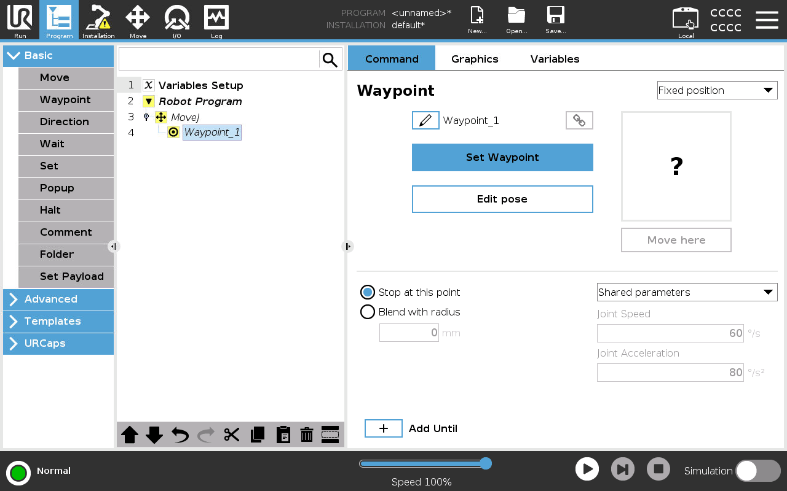
| 영어 (한국어) | 뜻 |
|---|---|
| Set Waypoint (웨이포인트 설정) | 이동 탭 화면으로 가서 로봇을 원하는 위치로 옮긴 뒤 확인하면, 그 위치가 웨이포인트가 됩니다 |
| Edit pose (포즈 편집) | 좌표와 관절 값을 숫자로 직접 고칩니다. 치수대로 경로를 만들 때 씁니다 |
| Move here (여기로 이동) | 로봇을 그 웨이포인트로 옮깁니다 |
| Stop at this point (이 포인트에서 정지) | 웨이포인트에서 멈췄다가 다음으로 갑니다 |
| Blend with radius (반지름으로 혼합) | 웨이포인트를 그 반지름 안에서 둥글게 지나가 멈추지 않습니다. 사이클 시간을 줄입니다 |
| Shared parameters (공유 매개변수 사용) | 위 Move 노드의 속도 · 가속도를 씁니다. 대신 이 웨이포인트만의 속도 · 가속도나 도착 시간(초)을 정할 수 있습니다 |
실습 환경 (WeGo 실습 안내서)
WeGo 교육의 실습 안내서와 실습 프로그램 파일(.urp)은 다음 환경을 기준으로 만들어졌습니다.
- 작업 영역의 중심: X = 0, Y = −400 mm, Z = 80 mm (베이스 기준)
- 치수: 강의장의 환경과 로봇 종류를 생각해 강의 자료 치수의 절반으로 설정 (예: 300 mm → 150 mm)
실습 전에 로봇의 설치 방향과 그리퍼의 길이를 생각해 충돌이 일어나지 않도록 환경을 구성하십시오. 아래 그림의 치수는 강의 자료 기준입니다.
예제 1 · MoveL로 사각 경로 만들기
- Move 노드를 넣고 MoveL로 바꿉니다.Program → Basic → Move를 누르면 MoveJ와 Waypoint_1이 생깁니다 (그림 12). 오른쪽 위 드롭다운에서 MoveL을 고릅니다.
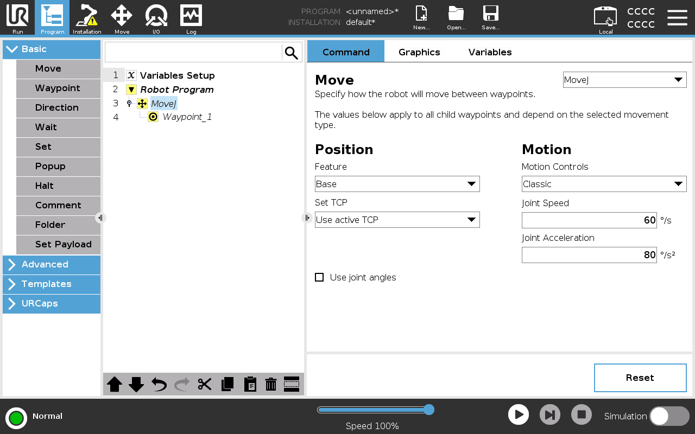
그림 12. Move 노드를 넣은 직후. 기본은 MoveJ이며 관절 속도 60°/s, 관절 가속도 80°/s²입니다 (URSim 5.26.3) - 웨이포인트를 여섯 개로 늘립니다.Waypoint 노드를 더 넣거나 복사해 Waypoint_1 ~ 6을 만듭니다.
- 각 웨이포인트를 가르칩니다.웨이포인트를 고르고 Set Waypoint를 눌러 이동 탭에서 툴을 그림의 위치로 옮긴 뒤 확인합니다.
- 시뮬레이션으로 실행해 보고, 사이클 시간을 기록합니다.다음 예제에서 블렌드를 넣은 뒤와 비교합니다.
예제 2 · 치수 맞추기와 블렌드
- 포즈 편집으로 치수를 맞춥니다.각 웨이포인트를 고르고 Edit pose(포즈 편집) 화면 오른쪽 위의 좌표 칸에 값을 넣어 그림의 치수대로 위치를 정합니다.
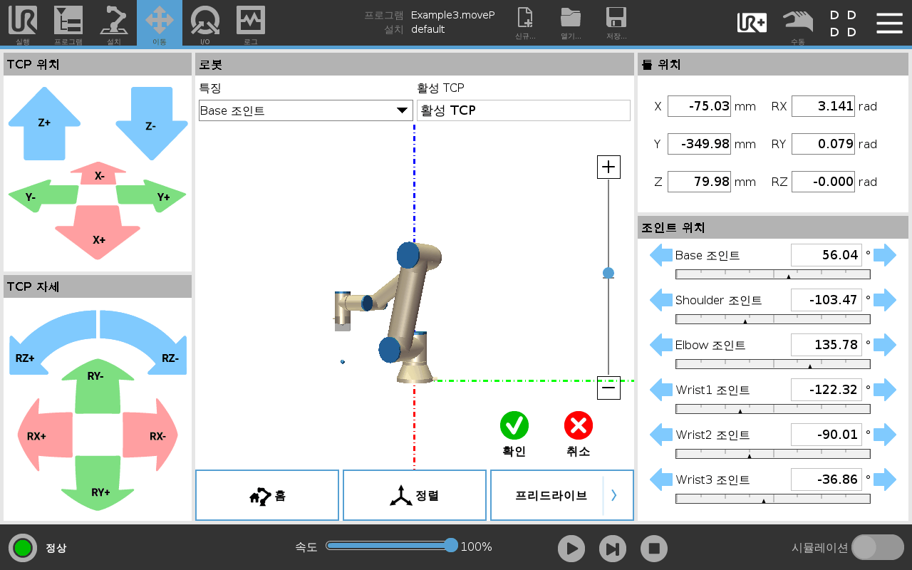
그림 13. 포즈 편집 화면. 오른쪽 위에서 TCP 좌표를, 아래에서 관절 값을 숫자로 넣습니다 (WeGo 실습 안내서) - Waypoint_2 · 3 · 4에 블렌드를 넣습니다.각 웨이포인트에서 Blend with radius(반지름으로 혼합)를 고르고 반지름을 넣습니다.
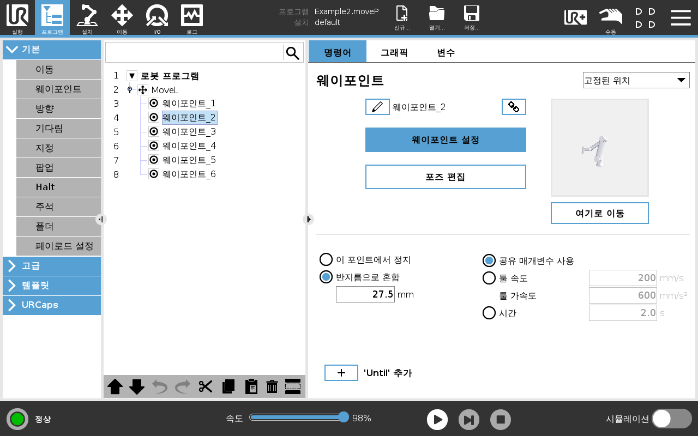
그림 14. Waypoint_2에 반지름으로 혼합을 설정한 화면 (WeGo 실습 안내서) - 다시 실행해 사이클 시간을 비교합니다.모서리에서 멈추지 않으므로 시간이 줄어듭니다.
WeGo 실습 안내서의 글은 Waypoint_2 · 3 · 4에 45 mm 반지름을 넣으라고 하고, 같은 슬라이드의 풀이 화면(그림 14)에는 27.5 mm가 들어 있습니다. 실습 파일은 강의 자료 치수의 절반으로 만들어졌으므로 화면의 값이 그 환경에 맞춘 것일 수 있습니다. 쓰는 경로의 치수에 맞춰 정하십시오.
예제 3 · MoveP로 바꾸기
- 예제 2의 프로그램을 불러옵니다.
- Waypoint_1 ~ 5를 MoveP 아래에 둡니다.MoveP는 모든 점에 같은 블렌드 반지름을 씁니다. 예제에서는 50 mm를 넣습니다.
- 직선 구간은 MoveL로 나눕니다.Waypoint_5는 MoveL 아래에 한 번 더 두어 직선으로 지나가게 하고, Waypoint_6과 1도 같은 방법으로 나눕니다 (그림 15).
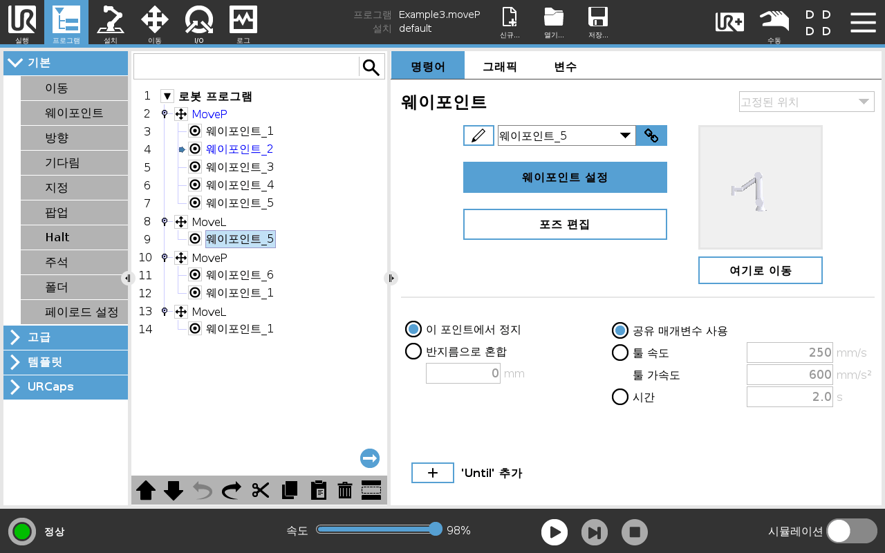
그림 15. MoveP와 MoveL을 섞은 프로그램 트리 (WeGo 실습 안내서) - 실행해 사이클 시간을 비교합니다.
예제 4 · 그리퍼로 집고 놓기
예제 3에 그리퍼 노드를 넣어 물건을 옮깁니다. 그리퍼 노드는 그리퍼 URCap을 설치하면 URCaps 노드 목록에 나타납니다 (11장). 순서: Waypoint_1에서 물건을 집어 Waypoint_5에 놓고, 그리퍼를 위로 올렸다가 Waypoint_5에서 다시 집어 Waypoint_1에 놓습니다.
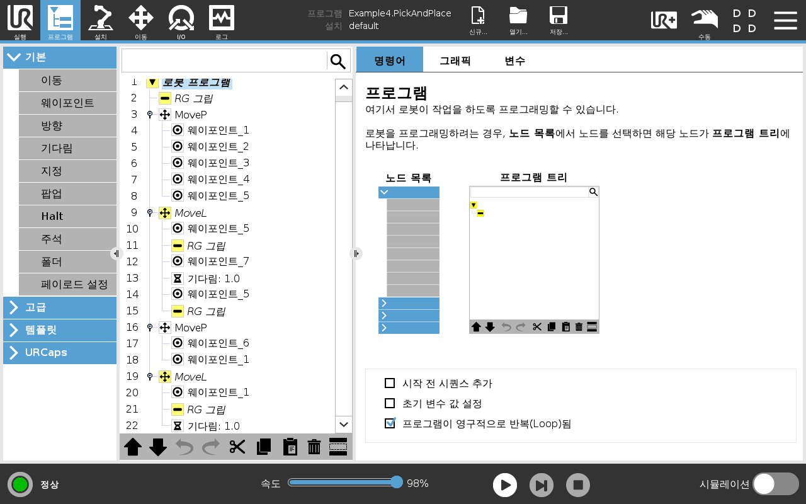
| 줄 | 노드 | 하는 일 |
|---|---|---|
| 2 | 그리퍼 | Waypoint_1에 있는 물건을 집습니다 (프로그램은 반복되므로 이전 사이클 끝의 위치가 Waypoint_1입니다) |
| 3 ~ 10 | MoveP · MoveL | Waypoint_1 → 5로 옮깁니다 |
| 11 | 그리퍼 | Waypoint_5에 놓습니다 |
| 12 ~ 13 | Waypoint_7 · 기다림 1.0초 | Waypoint_5에서 Z+ 방향으로 올린 위치로 갔다가 기다립니다 |
| 14 ~ 15 | Waypoint_5 · 그리퍼 | 다시 내려가 물건을 집습니다 |
| 16 ~ 20 | MoveP · MoveL | Waypoint_6을 거쳐 Waypoint_1로 돌아갑니다 |
| 21 ~ 22 | 그리퍼 · 기다림 1.0초 | Waypoint_1에 놓고 기다립니다 |
WeGo 실습 자료의 과제 글은 그리퍼를 100 mm 위로 올리라고 하고, 풀이 단계는 Waypoint_7을 Waypoint_5에서 Z+ 방향 50 mm로 정하라고 합니다. 어느 쪽이든 실습 환경에서 충돌이 없는 높이로 정하십시오.
I/O를 쓰는 명령
외부 장치와 신호를 주고받을 때는 Set(지정)과 Wait(기다림)을 씁니다.
예를 들어 센서 신호를 기다렸다가(Wait: digital_in[0] = HI) 집고, 그리퍼 출력을 바꾼 뒤(Set: tool_out[0]) 짧게 기다리는 식입니다.
| 노드 | 선택지 |
|---|---|
| Wait (기다림) | 기다리지 않음 · 정한 시간 · 디지털 입력 · 아날로그 입력 · 식(expression) |
| Set (지정) | 작업 없음 · 디지털 출력 · 아날로그 출력 · 식 · 한 번 펄스 · 변수 증가 · 총 페이로드 · TCP |
시뮬레이션으로 연습할 때는 실제 센서가 없으므로 디지털 입력을 기다리는 노드는 빼거나 시간 기다림으로 바꾸십시오 (WeGo 실습 안내).
변수 · 반복 · 조건
프로그램을 늘릴 때 자주 쓰는 노드입니다. 각 노드의 설정 화면과 세부 기능은 UR 사용자 설명서의 프로그램 노드 설명을 보십시오.
| 노드 | 쓰는 방법 |
|---|---|
| 변수 · Assignment(할당) | 값을 담는 칸입니다. 종류는 불리언 · 정수 · 실수 · 문자열 · 포즈(p[x, y, z, rx, ry, rz]) · 목록입니다.
프로그램 변수는 그 프로그램에서만 쓰이고 전원을 끄면 지워지며, 설치 변수(Installation → General → Variables)는 같은 설치를 쓰는 모든 프로그램에서 쓰이고 다시 켜도 값이 남습니다.
로봇 프로그램 노드의 «초기 변수 값 설정»으로 시작 값을 줄 수 있고, 할당의 출처를 작업자로 바꾸면 화면에서 값을 입력받습니다 |
| Loop (반복) | 항상 반복 · 정한 횟수 반복 · 식이 참인 동안 반복. 카운터 변수(var_1 = var_1 + 1)와 함께 자주 씁니다 |
| If · ElseIf · Else | 센서 입력이나 변수 값에 따라 다른 동작을 합니다. ElseIf로 조건을 여러 개 둘 수 있습니다 |
| Switch · Case | 값에 따라 여러 경우로 나눕니다. 맞는 Case가 없으면 기본(default) Case를 실행합니다 |
| SubProgram (서브 프로그램) | 여러 곳에서 쓰는 동작을 따로 만들어 불러옵니다. 파일로 저장해 다른 프로그램에서도 쓸 수 있습니다. 서브 프로그램 안에서 다른 서브 프로그램을 부를 수는 없습니다 |
| Thread (스레드) | 로봇 프로그램과 나란히 계속 돕니다. I/O 감시나 외부 장치 제어에 씁니다 (11장의 그리퍼 예) |
실행 전 확인과 저장
- 새 프로그램은 먼저 아래쪽 띠의 Simulation(시뮬레이션)을 켜고 실행해 3D 화면으로 경로를 확인하십시오. 시뮬레이션에서는 로봇팔이 움직이지 않습니다.
- 머리띠의 Save(저장)로 프로그램과 설치 파일을 함께 저장하십시오.
URSim 가상 환경
URSim은 Universal Robots가 무료로 내려받게 해 주는 오프라인 시뮬레이터입니다. PC에서 실제 로봇과 같은 PolyScope 화면을 띄워 프로그램을 만들고 시험할 수 있고, Dashboard Server · RTDE · ROS 2 드라이버도 실제 로봇처럼 연결됩니다. e-Series용과 CB-Series용이 따로 있습니다.
교육에서 쓰는 방법
WeGo 교육은 수강생이 각자 URSim으로 강사와 함께 예제를 풀고, 실습 시간에는 가상 환경에서 만든 프로그램을 한 팀씩 실제 로봇에 넣어 돌려 봅니다.
프로그램 파일(.urp)은 USB 메모리로 실제 로봇과 URSim 사이에 옮깁니다.
설치 방법 고르기
| 방법 | PC | 특징 |
|---|---|---|
| A. 가상 머신 | Windows 등 Linux가 아닌 PC | UR이 배포하는 «URSim for non-Linux» 가상 디스크를 가상 머신 프로그램에서 실행합니다. WeGo 교육의 기본 방법입니다 |
| B. Docker | Linux PC | UR이 공개한 Docker 이미지를 실행하고 웹 브라우저로 화면을 봅니다. 여러 대를 함께 띄우기 쉬워 WeGo는 ROS 2 · RTDE 개발에 이 방법을 씁니다 |
A. 가상 머신으로 쓰기
universal-robots.com/download에서 e-Series → Software → Offline Simulator → Non-Linux를 차례로 골라 URSim 가상 디스크를 받고, Oracle VM VirtualBox에서 실행합니다. 가상 머신 만들기(종류 Linux · Ubuntu 64비트, 기존 가상 디스크 사용), 디스플레이 · 공유 폴더 · 키보드 · 네트워크 어댑터 설정은 같은 페이지의 UR 설치 안내서(«URSim installation guide»)를 단계별로 따르십시오. 바탕 화면의 아이콘으로 UR3e · UR5e · UR10e · UR16e 중 하나를 골라 실행합니다.
VirtualBox 본체는 GPLv3로 무료이지만, USB 연결에 쓰는 «VirtualBox Extension Pack»은 개인 · 교육용 라이선스(PUEL)입니다. 회사 업무에 쓰려면 Oracle의 유료 라이선스가 필요합니다. 확장 팩 없이 쓸 때는 공유 폴더로 파일을 옮기십시오.
USB 메모리 연결 (WeGo 교육 자료)
- 확장 팩을 설치합니다.virtualbox.org/wiki/Downloads에서 VirtualBox 버전과 같은 Extension Pack을 받아 설치합니다. WeGo 자료는 USB 연결에 이 팩이 필요하다고 적었습니다.
- USB 컨트롤러를 켭니다.USB 메모리를 PC에 꽂고, 가상 머신의 설정 → USB에서 USB 3.0(xHCI) 컨트롤러를 고른 뒤, 오른쪽 + 아이콘으로 꽂은 USB 장치를 필터에 추가합니다.
- 인식을 확인합니다.가상 머신을 켜고 파일 관리자의 장치 목록에 USB 메모리가 보이는지 확인합니다.
B. Docker로 쓰기 실측
Linux의 Docker Engine(Apache 2.0)을 기준으로 합니다. Windows · macOS의 Docker Desktop은 직원 250명 이상 또는 연매출 1천만 달러 이상인 회사가 업무에 쓰려면 유료 구독이 필요합니다.
이미지와 옵션은 Docker Hub의 universalrobots/ursim_e-series 페이지에 있습니다.
docker pull universalrobots/ursim_e-series docker run --rm -it -p 5900:5900 -p 6080:6080 universalrobots/ursim_e-series
웹 브라우저에서 http://localhost:6080/vnc.html을 열면 PolyScope 화면이 보입니다(5900은 VNC 포트). 로봇 모델은 -e ROBOT_MODEL=…로 고르며,
값은 UR3 · UR5 · UR7 · UR8LONG · UR10 · UR12 · UR15 · UR16 · UR18 · UR20 · UR30, 기본값은 UR5입니다 (버전에 따라 일부 모델이 없을 수 있음).
Dashboard Server를 쓰려면 -p 29999:29999처럼 포트를 더 엽니다.
위 예의 --rm으로 띄운 컨테이너는 끄면 지워지므로, PolyScope에서 바꾼 설정(원격 제어 사용 등)도 함께 사라집니다.
설정을 남기려면 --rm 없이 이름을 붙여 만들고, 그 뒤로는 docker stop · docker start로 끄고 켜십시오. docker rm을 하면 설정이 사라집니다.
docker stop · start 뒤에도 원격 제어 «사용» 설정은 남지만 제어 모드는 로컬로 돌아오므로, 다시 원격 제어로 바꾸어야 합니다 (URSim 5.26.3, 2026-11-17 확인).
WeGo는 개발 PC에 Docker 네트워크를 하나 만들어 URSim 두 대(UR7e)에 고정 주소를 주고, 웹 화면 포트를 6080 · 6081로 나누어 양팔 시스템을 시험합니다.
ROS 2 드라이버 문서도 URSim 예시 주소로 192.168.56.101을 씁니다 (11장).
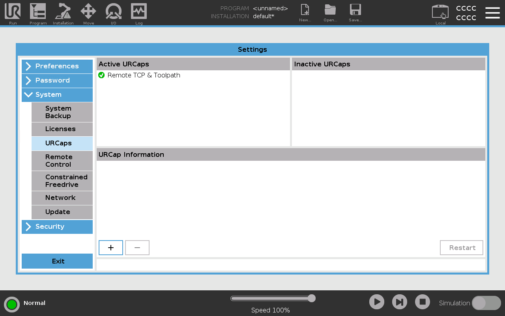
네트워크 · 원격 제어 · ROS
개발 PC를 이더넷으로 컨트롤 박스에 연결하면 Dashboard Server로 전원 · 프로그램을, RTDE로 상태 읽기와 동작 명령을, ROS 2 드라이버로 MoveIt 같은 ROS 도구를 쓸 수 있습니다. 먼저 같은 서브넷의 고정 주소를 정하고, 원격 제어를 켭니다.
로봇 IP 설정
- 메뉴 → Settings → System → Network를 엽니다.방식은 DHCP · Static Address(고정 주소) · Disabled network 세 가지입니다.
- Static Address를 고르고 주소를 넣습니다.IP 주소와 서브넷 마스크(보통 255.255.255.0)를 넣습니다. PC와 직접 연결하면 게이트웨이와 DNS는 비워 둡니다 (0.0.0.0).
- Apply를 누릅니다.메뉴 → About에서 적용된 IP 주소를 확인할 수 있습니다.
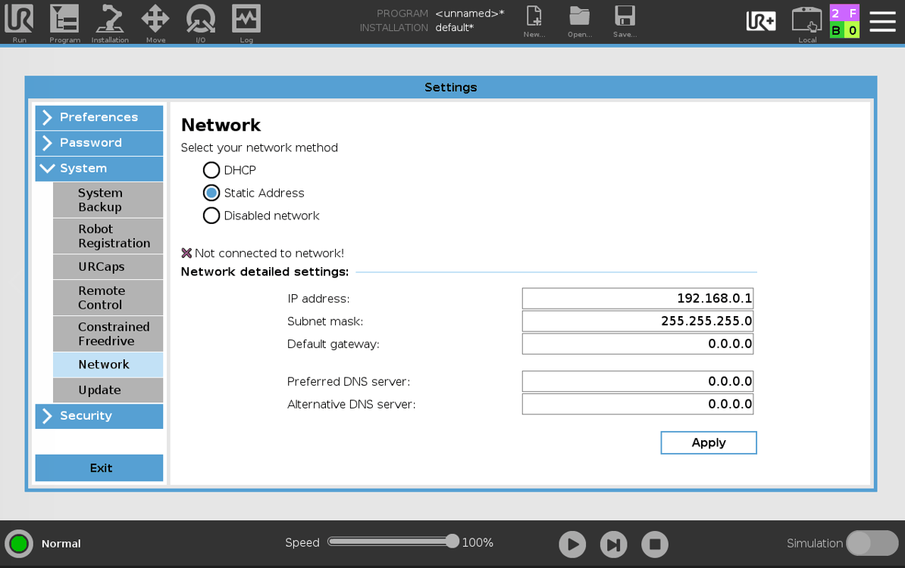
개발 PC IP 설정 (Ubuntu)
- 화면 오른쪽 위 툴바에서 유선 연결 → Wired Settings를 누릅니다.
- Network → Wired 항목의 톱니바퀴를 누릅니다.
- IPv4 탭에서 Manual을 고르고 주소를 넣습니다.로봇과 같은 서브넷의 다른 주소와 넷마스크 255.255.255.0을 넣습니다.
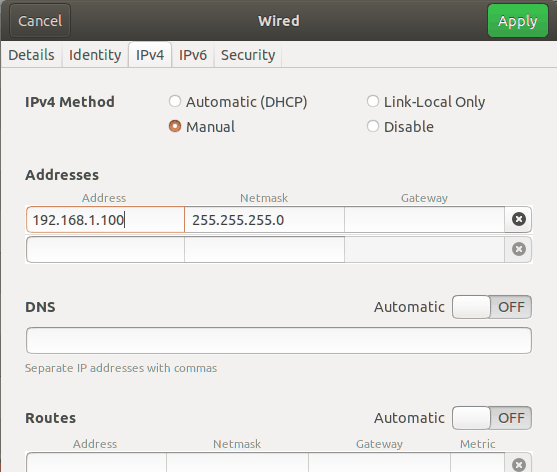
그림 19. Ubuntu 유선 연결의 IPv4 수동 설정 (WeGo ROS 설정 자료) - Apply로 저장한 뒤 Wired 연결을 껐다가 다시 켭니다.새 주소가 적용됩니다. 터미널에서
ping <로봇 IP>로 연결을 확인합니다.
WeGo ROS 설정 자료의 글은 로봇을 192.168.0.1, PC를 192.168.0.10으로 정하라고 하고, 같은 자료의 PC 설정 화면(그림 19)에는 192.168.1.100이, 그리퍼 자료의 프로그램 화면에는 PC 주소 192.168.1.101이 들어 있습니다. 모두 교육용 예이며 공장 기본값이 아닙니다. 로봇과 PC가 같은 서브넷에 있고 주소가 겹치지 않으면 어느 값이든 됩니다.
통신 포트 문서
| 포트 | 인터페이스 | 용도 |
|---|---|---|
| 29999 | Dashboard Server | 프로그램 불러오기 · 실행 · 일시정지 · 정지, 전원 · 브레이크, 상태 읽기 |
| 30001 | Primary | 로봇 상태와 추가 메시지를 보내고 URScript를 받습니다 |
| 30002 | Secondary | 로봇 상태만 보내고 URScript를 받습니다 |
| 30003 | Real-time | 상태를 보내고 URScript를 받습니다. 갱신 주기가 다릅니다 |
| 30004 | RTDE | 원하는 상태 값만 골라 받고, 목표값 · 레지스터를 보냅니다 |
| 30020 | Interpreter Mode | 실행 중에 URScript 문장을 추가로 실행합니다 |
방향이 반대인 포트도 있습니다. ROS 드라이버를 쓸 때는 로봇의 External Control URCap이 개발 PC의 포트 50002(기본값, URCap 설정에서 바꿀 수 있음)에 접속해 제어 스크립트를 받습니다.
원격 제어 켜기
- 원격 제어 기능을 켭니다.메뉴 → Settings → System → Remote Control에서 Enable을 누릅니다.
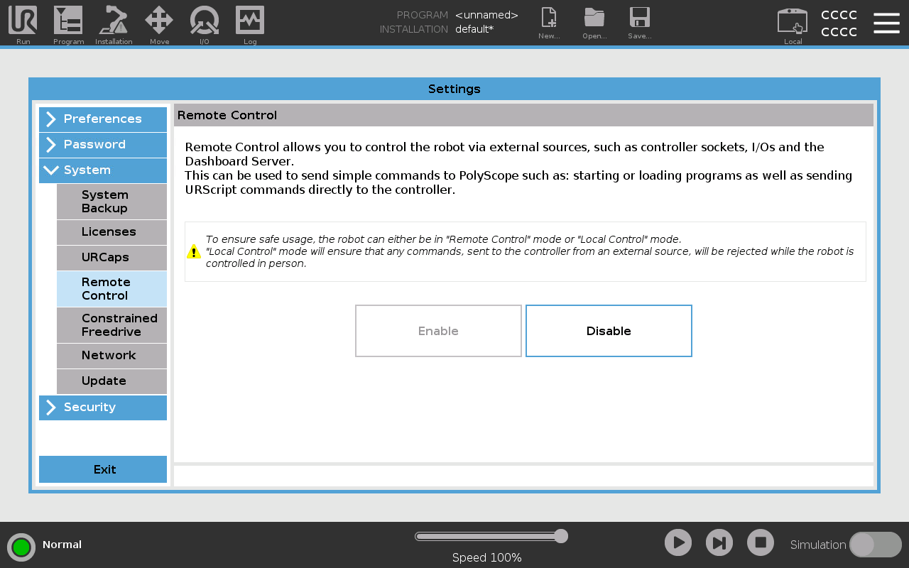
그림 20. Settings → System → Remote Control. 로컬 제어에서는 외부에서 온 명령이 거부된다는 안내가 있습니다 (URSim 5.26.3) - 원격 제어로 바꿉니다.머리띠 오른쪽의 Local 아이콘을 누르고 Remote Control을 고릅니다. 티치 펜던트로 다시 조작하려면 같은 메뉴에서 로컬로 되돌립니다.
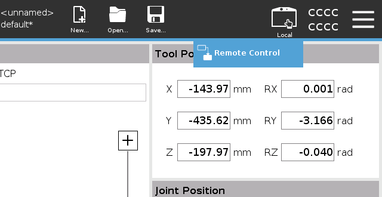
그림 21. 머리띠의 Local 아이콘 메뉴 (URSim 5.26.3)
원격 제어에서는 티치 펜던트의 이동 탭 · 프리드라이브 · 프로그램 시작이 제한됩니다. 원격 제어가 아닐 때 Dashboard Server는 일부 명령에 «Command is not allowed due to safety reasons, please switch robot to Remote Control mode and reconnect to port 29999»라고 답합니다.
WeGo의 2026-11-12 기록에는 URSim이 로컬 제어일 때 ur_rtde 제어 연결이 «Failed to start RTDE data synchronization»으로 실패했다고 되어 있습니다.
2026-11-18 같은 URSim(5.26.3, 원격 제어 기능 사용 · 로컬 제어)에서 다시 확인했을 때는, 브레이크가 잠긴 상태(IDLE)에서 «Failed to start control script»로 실패했고,
브레이크를 푼 상태(RUNNING)에서는 moveJ가 동작했습니다. 결과가 상태와 버전에 따라 다르므로, PC에서 로봇을 움직일 때는 원격 제어로 바꾸고 쓰십시오.
Dashboard Server
포트 29999에 TCP로 접속해 한 줄짜리 문자열 명령을 보냅니다. 명령은 대소문자를 가리지 않고, 줄바꿈(\n)으로 끝나야 합니다. 접속하면 먼저 인사말
(«Connected: Universal Robots Dashboard Server»)이 옵니다. 자주 쓰는 명령은 부록에 있습니다.
| 명령 | 동작 · 응답 예 |
|---|---|
power on · power off | 로봇팔 전원을 켜고 끕니다 («Powering on») |
brake release | 브레이크를 풉니다 («Brake releasing») |
robotmode | 로봇 모드 («Robotmode: POWER_OFF» · IDLE · RUNNING) |
safetystatus | 안전 상태 («Safetystatus: NORMAL») |
unlock protective stop | 보호 정지를 풉니다 |
is in remote control | 원격 제어인지 («true» · «false») |
PolyscopeVersion · get robot model | 소프트웨어 버전과 모델 («URSoftware 5.26.3…», «UR5»). URSim의 UR7e는 모델을 UR5로 답합니다 |
get operational mode | MANUAL · AUTOMATIC · NONE. 운영 모드 비밀번호를 정하지 않았으면 NONE이며 오류가 아닙니다 |
set operational mode manual · automatic | 운영 모드를 바꿉니다 («Operational mode 'manual' is set») |
clear operational mode | 운영 모드 제어를 티치 펜던트에 돌려줍니다 |
set operational mode를 보낸 뒤에는 티치 펜던트에서 운영 모드를 바꿀 수 없고 모드 비밀번호도 꺼진 상태로 남습니다. 작업이 끝나면 반드시
clear operational mode를 보내 원래 조작 방식으로 되돌리십시오. 외부 모드 선택기가 연결되어 있으면 PolyScope와 Dashboard Server가 아니라 그 선택기가 모드를 정합니다.
다음은 WeGo 지원 문서의 운영 모드 전환 스크립트를 줄여 쓴 것입니다 (Python 표준 라이브러리만 씀, URSim 5.26.3에서 확인).
"""UR Dashboard Server(29999): 운영 모드 조회 · 전환. 사용: python3 ur_mode.py <로봇 IP>"""
import socket, sys
def send(sock, cmd):
sock.sendall((cmd + "\n").encode())
return sock.recv(1024).decode().strip()
with socket.create_connection((sys.argv[1], 29999), timeout=2) as s:
s.recv(1024) # 접속 인사말
print("지금 운영 모드:", send(s, "get operational mode"))
choice = input("1 수동 · 2 자동 · 3 펜던트에 돌려주기 · 그 밖 종료: ").strip()
cmd = {"1": "set operational mode manual", "2": "set operational mode automatic",
"3": "clear operational mode"}.get(choice)
if cmd:
print(send(s, cmd))
응답에 failed가 들어 있을 때의 원인을 WeGo 지원 문서 두 개가 다르게 적었습니다. 페이로드 설정 문서는 «보호 정지 상태이거나 원격 제어 설정이 꺼져 있는 경우», 티치 펜던트 문서는 «보호 정지 상태이거나 외부 모드 선택기가 연결된 경우»라고 합니다. 세 가지를 모두 확인하십시오. 또 페이로드 설정 문서는 펜던트의 원격 버튼으로 «로컬 제어(자동)»로 바꾼다고 적어 제어 모드와 운영 모드를 섞어 썼습니다. 둘은 다른 상태입니다 (표 7).
RTDE와 ur_rtde
RTDE(Real-Time Data Exchange, 포트 30004)는 원하는 상태 값만 골라 빠르게 받고, 목표값을 보내는 인터페이스입니다. WeGo는 Python · C++ 라이브러리
ur_rtde(SDU Robotics, MIT 라이선스)를 씁니다. 설치: pip install --user ur_rtde (WeGo 확인 버전 1.6.5).
import sys import rtde_receive r = rtde_receive.RTDEReceiveInterface(sys.argv[1]) print(r.getActualQ()) # 관절 각도 6개 [rad] print(r.getActualTCPPose()) # TCP 포즈 [x, y, z, rx, ry, rz] [m, rad] print(r.getRobotMode(), r.getSafetyMode())
움직이는 명령은 rtde_control로 보냅니다. 아래 예는 리스트 3만 0.1 rad 돌립니다 (URSim 5.26.3에서 확인).
import sys import rtde_control, rtde_receive ip = sys.argv[1] r = rtde_receive.RTDEReceiveInterface(ip) c = rtde_control.RTDEControlInterface(ip) # 브레이크가 풀린 상태여야 연결됩니다 q = r.getActualQ() q[5] += 0.1 # 리스트 3만 0.1 rad 돌림 c.moveJ(q, 0.2, 0.2) # 속도 [rad/s], 가속도 [rad/s²] c.stopScript()
- 제어 스크립트: RTDE 제어는 컨트롤러 쪽에서 도는 제어 스크립트에 기댑니다. 일반적인 일시정지는
stopJ·stopL같은 부드러운 정지로 하고stopScript()를 부르지 않으면, 제어 스크립트가 남아 다음 동작에 다시 쓸 수 있습니다.stopScript()는 끝낼 때 부릅니다. - 스레드:
RTDEControlInterface는 스레드에 안전하지 않습니다. 여러 스레드에서 쓸 때는 잠금(mutex) 하나로 호출을 직렬화하십시오. «RTDE control script is not running»이나 «another thread is controlling the robot» 메시지가 나오면, 정지 명령이 겹쳐 나가거나 다른 스레드가 직접 호출하고 있지 않은지 확인하십시오. - 상태 판단:
getRobotMode()의 −1은 ROBOT_MODE_NO_CONTROLLER로, 비상 정지 코드가 아닙니다. 비상 정지는getSafetyMode()의 SYSTEM_EMERGENCY_STOP · ROBOT_EMERGENCY_STOP으로 판단합니다. - servoJ 지연: 스트리밍 제어(
servoJ)의 지연은 대략 lookahead 시간 + 20 ms였습니다 (URSim, 100 Hz 사인파 지령: lookahead 0.2 s → 220 ms, 0.1 s → 120 ms, 0.05 s → 70 ms, 0.03 s → 50 ms, gain 300 ~ 600에서 잔차가 가장 작음). 시뮬레이터 값이므로 실제 로봇과 잡음이 있는 입력에서는 더 큰 lookahead가 필요할 수 있습니다.
URCap 설치와 External Control
URCap은 PolyScope 확장 프로그램입니다. 그리퍼 · 센서 제조사가 주는 URCap이나 ROS 드라이버용 External Control URCap(Universal Robots, Apache 2.0)을 이렇게 설치합니다.
.urcap파일을 USB 메모리에 담아 티치 펜던트에 꽂습니다.- 메뉴 → Settings → System → URCaps에서 + 를 누르고 파일을 고릅니다 (그림 17).
- Restart로 PolyScope를 다시 시작합니다.다시 뜨면 Active URCaps 목록에 녹색 체크로 나타납니다.
- External Control을 설정합니다.Installation → URCaps → External Control에서
Host IP에 개발 PC의 주소를, Custom port에 50002(기본값)를 넣고 설치를 저장합니다.
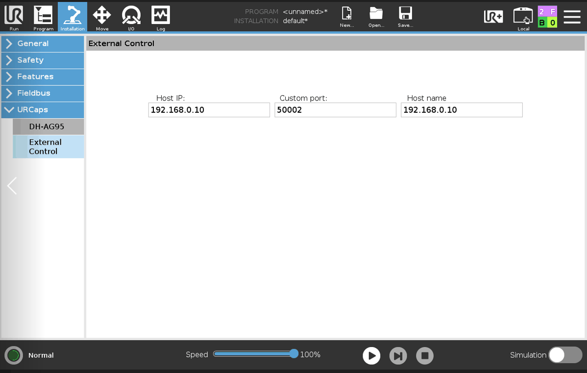
그림 22. Installation → URCaps → External Control. Host IP는 개발 PC 주소 (WeGo ROS 설정 자료. 주소는 교육용 예) - 프로그램에 External Control 노드를 넣습니다.Program → URCaps → External Control을 넣으면 트리에 «Control by <PC IP>»가 생깁니다.
PC에서 드라이버를 띄운 뒤 펜던트에서 이 프로그램을 실행(▶)하면 PC가 로봇을 제어합니다.
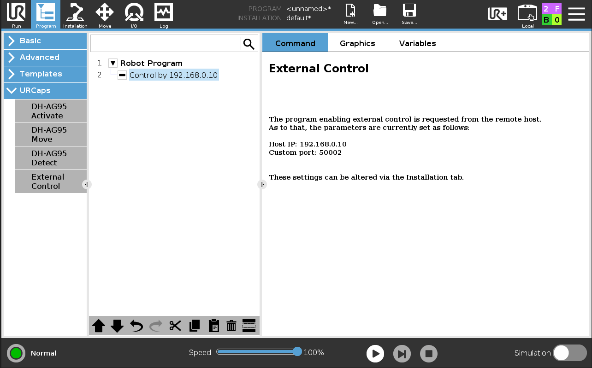
그림 23. External Control 프로그램 노드 (WeGo ROS 설정 자료)
ROS 2 드라이버
Universal Robots의 ROS 2 드라이버(Universal_Robots_ROS2_Driver, BSD-3-Clause)는 PolyScope X · PolyScope 5 · CB3 로봇을 지원합니다.
드라이버 문서의 지원 배포판은 Humble · Jazzy · Kilted · Lyrical · Rolling이며, Foxy · Galactic · Iron은 지원이 끝난 배포판(EOL)으로 분류되어 있습니다.
sudo apt install ros-${ROS_DISTRO}-ur
ros2 launch ur_robot_driver ur_control.launch.py ur_type:=ur5e robot_ip:=<로봇 IP>
ur_type에는 로봇 모델(ur3e · ur5e · ur7e · ur10e · ur12e · ur16e 등)을 넣습니다. 드라이버를 띄운 뒤 펜던트에서 External Control 프로그램을 실행하십시오.
URSim으로 시험할 때는 드라이버 문서의 예처럼 robot_ip:=192.168.56.101(URSim 컨테이너 주소)을 씁니다.
설치와 설정의 세부 사항(캘리브레이션 등)은 드라이버 문서를 보십시오.
ROS 1 (WeGo 2023 자료)
WeGo의 ROS 설정 자료(2023-11-10 기준)는 ROS 1(Melodic · Noetic)용 드라이버 Universal_Robots_ROS_Driver(Apache 2.0)를 씁니다. 새로 구성한다면 ROS 2 드라이버를 쓰십시오.
| 할 일 | 명령 |
|---|---|
| 설치 (apt) | sudo apt install ros-${ROS_DISTRO}-ur-robot-driver |
| 드라이버 실행 | roslaunch ur_robot_driver ur5e_bringup.launch robot_ip:=<로봇 IP> |
| MoveIt 실행 | roslaunch ur5e_moveit_config move_group.launch |
| RViz (시뮬레이션) | roslaunch ur5e_moveit_config moveit_rviz.launch |
드라이버 패키지는 상태를 받아 ros_control을 멈추는 controller_stopper, 캘리브레이션 값을 뽑는 ur_calibration, I/O 등 제어 메시지를 담은 ur_dashboard_msgs, 드라이버 본체 ur_robot_driver로 이루어지고, 로봇 모델 패키지(universal_robot)에는 ur_description(URDF) · ur_gazebo · ur_kinematics · ur_moveit_config가 있습니다. 기본 설치된 MoveIt 설정 패키지는 잘 동작하지 않을 수 있으므로, 필요하면 MoveIt 설정 패키지를 새로 만드십시오 (WeGo 자료).
RViz의 MotionPlanning에서 Planning Group을 manipulator로 두고 관절 슬라이더로 목표를 정한 뒤, 실제 로봇이면 반드시 먼저 Plan을 눌러 경로를 보고, 문제가 없을 때만 Execute를 누르십시오.
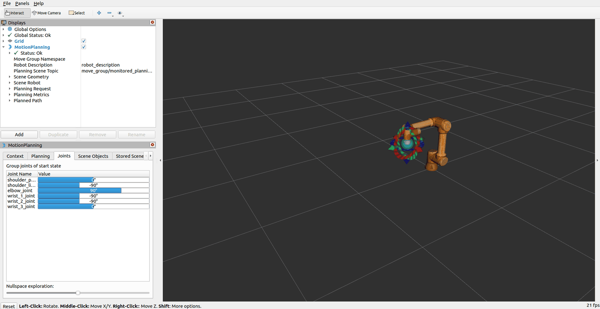
ROS에서 그리퍼 다루기 (I/O 경유)
WeGo 그리퍼 자료(2023-12-12)는 URCap으로 움직이는 그리퍼를 ROS에서 다루는 방법을 보여 줍니다. ROS가 드라이버의 I/O 서비스로 로봇의 디지털 출력을 바꾸면, 펜던트 프로그램의 스레드가 그 출력을 보고 그리퍼 URCap 노드를 실행합니다. URCap을 지원하는 그리퍼라면 같은 방법으로 쓸 수 있습니다.
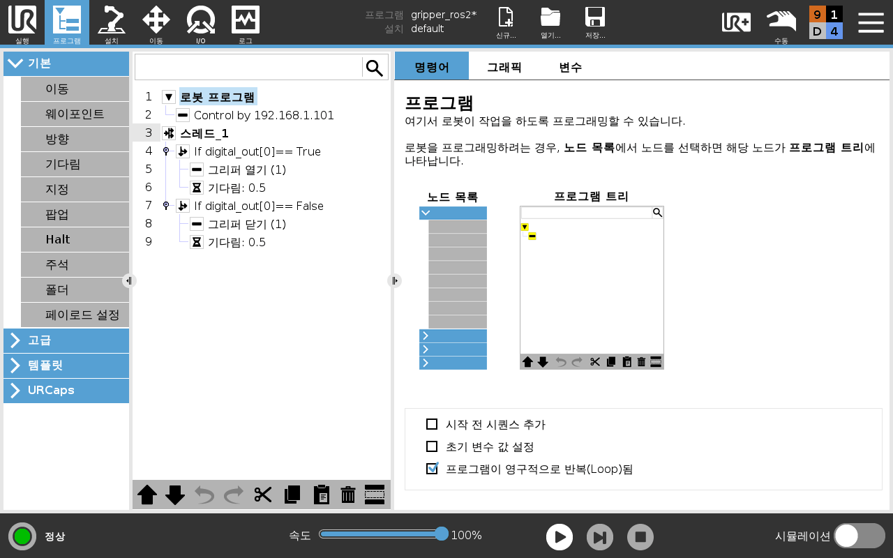
| 항목 | 값 |
|---|---|
| 서비스 · 상태 토픽 (ROS 2) | /io_and_status_controller/set_io · /io_and_status_controller/io_states |
| 서비스 · 상태 토픽 (ROS 1) | /ur_hardware_interface/set_io · /ur_hardware_interface/io_states |
fun | 1 디지털 출력 · 2 플래그 · 3 아날로그 출력 · 4 툴 전압 |
pin | 출력 번호 (디지털 출력 0 ~ 7, 구성 가능한 출력 8 ~ 15, 툴 디지털 출력 16 · 17) |
state | 디지털: 0 끔 · 1 켬. 툴 전압: 0 · 12 · 24 (V) |
ROS 2에서 디지털 출력 0을 켜고 끄는 예입니다 (WeGo 자료의 예를 줄여 씀). python3 set_do0.py 1이면 켜고, 0이면 끕니다.
import sys
import rclpy
from ur_msgs.srv import SetIO
rclpy.init()
node = rclpy.create_node("set_io_client")
cli = node.create_client(SetIO, "/io_and_status_controller/set_io")
cli.wait_for_service()
req = SetIO.Request(fun=SetIO.Request.FUN_SET_DIGITAL_OUT, pin=0, state=float(sys.argv[1]))
future = cli.call_async(req)
rclpy.spin_until_future_complete(node, future)
print(future.result().success)
rclpy.shutdown()
출력이 바뀌는지는 펜던트의 I/O 탭이나 상태 토픽에서 확인합니다. 그리퍼 자료의 예는 ROS 1 Noetic · ROS 2 Galactic(Ubuntu 20.04)에서 만들었으며, Galactic은 이제 지원이 끝난 배포판입니다.
문제 해결
WeGo가 교육과 현장 지원, URSim 시험에서 만난 증상과 조치입니다. 여기에 없는 오류 코드는 PolyScope 로그 탭의 메시지와 UR 사용자 설명서 · 지원 문서(universal-robots.com/articles)를 보십시오.
전원 · 시작
| 증상 | 원인 | 조치 |
|---|---|---|
| ON · START를 눌러도 전원이 들어가지 않거나 브레이크가 풀리지 않음 | 비상 정지가 눌려 있음 | 비상 정지를 풀고 다시 시작합니다 (5장) |
| 오류 코드 C283, 로봇이 시작되지 않음 | Safety → Hardware의 TeachPendant 선택값이 실제 연결과 다름 (3PE 펜던트를 Standard로 고른 경우 포함) | 펜던트를 연결했으면 Standard 또는 3PE Enabled, 뗐으면 No를 고르고 적용합니다 (8장) |
| 펜던트를 뗀 뒤 전원을 켤 수 없음 | 외부 전원 버튼이 배선되지 않음 | 원격 ON / OFF 입력을 배선합니다 (8장) |
| 보호 정지가 자주 나고 오류 163(TOO_FREQUENT_PROTECTIVE_STOPS) | 한 관절에서 같은 종류의 보호 정지가 8시간에 50번을 넘음 | 원인을 없앤 뒤, 최소 5초 기다렸다가 보호 정지를 풉니다 (UR 지원 문서) |
원격 제어 · Dashboard · RTDE
| 증상 | 원인 | 조치 |
|---|---|---|
| 머리띠에 Local / Remote 아이콘이 없음 | 원격 제어 기능이 꺼져 있음 | Settings → System → Remote Control에서 Enable을 누릅니다 (11장) |
| Dashboard가 «Command is not allowed due to safety reasons …»로 답함 | 로컬 제어 상태 | 원격 제어로 바꾸고 포트 29999에 다시 접속합니다 |
set operational mode의 응답에 failed | 보호 정지, 원격 제어 설정 꺼짐, 외부 모드 선택기 연결 (11장 참고 상자) | 로봇 상태를 먼저 해소하고 세 가지를 확인합니다 |
| 펜던트에서 운영 모드를 바꿀 수 없고 모드 비밀번호가 안 먹음 | Dashboard로 set operational mode를 보낸 뒤 해제하지 않음 | clear operational mode를 보냅니다 |
get operational mode가 NONE | 운영 모드 비밀번호를 정하지 않음 | 오류가 아닙니다 |
| ur_rtde 제어 연결이 «Failed to start control script» 또는 «Failed to start RTDE data synchronization»으로 실패 | 브레이크가 잠긴 상태(IDLE)이거나 로컬 제어 상태 (11장 참고 상자) | 전원 켜기 · 브레이크 해제 뒤 원격 제어로 바꾸고 다시 연결합니다 |
| «RTDE control script is not running», «another thread is controlling the robot» | 정지 명령이 겹쳐 나가거나, 여러 스레드가 RTDEControlInterface를 직접 호출 | 제어 호출을 잠금 하나로 직렬화하고, 일시정지에는 stopScript() 대신 부드러운 정지를 씁니다 |
| RTDE 로봇 모드가 −1 | ROBOT_MODE_NO_CONTROLLER (비상 정지 아님) | 비상 정지 여부는 안전 모드(SYSTEM_EMERGENCY_STOP · ROBOT_EMERGENCY_STOP)로 판단합니다 |
servoJ로 따라가는 동작이 늦음 | lookahead 시간만큼 지연 (URSim에서 지연 ≈ lookahead + 20 ms) | lookahead를 줄입니다. 실제 로봇에서는 실제 입력 장치를 쥔 상태에서만 낮추어 봅니다 |
TCP · 페이로드
| 증상 | 원인 | 조치 |
|---|---|---|
| TCP 위치 티칭에서 LED가 빨간색 | 저장한 위치들의 각도 차이가 작음 | 각도를 벌려 다시 저장하고, 네 번째 위치로 확인합니다 (6장) |
| 티칭한 TCP가 공표값 · 계산값과 크게 다름 | 포인트를 맞추는 오차, 툴 끝이 뾰족하지 않음 | 뾰족한 지그를 붙여 다시 티칭하거나 실측 값을 씁니다 |
| 다시 켜면 TCP · 페이로드가 이전 값 | 설치 파일을 저장하지 않음 | 값을 넣은 뒤 설치를 저장합니다 |
| 툴을 바꾼 뒤 위치가 어긋나거나 힘 값이 이상함 | 이전 툴의 TCP · 페이로드가 그대로 쓰임 | 새 툴의 구성을 다시 적용합니다. 툴을 떼었어도 남은 부품의 페이로드를 넣습니다 |
| 힘 측정값에 일정한 오차 | 페이로드가 실제와 다름 | 실제 구성 그대로 페이로드를 다시 측정합니다 |
| PC 프로그램의 무게중심이 1000배 | 펜던트의 mm 값을 m 단위 설정에 그대로 넣음 | 1000으로 나누어 넣습니다 |
URSim · ROS
| 증상 | 원인 | 조치 |
|---|---|---|
| Docker URSim을 다시 띄우면 원격 제어 설정이 사라짐 | --rm 또는 docker rm으로 컨테이너가 지워짐 | 이름을 붙여 만들고 docker stop · start로 씁니다. 다시 켠 뒤에는 로컬 → 원격 제어로 바꿉니다 (10장) |
| PC에서 Dashboard에 연결이 거부됨 | PolyScope가 아직 뜨는 중 | 몇 초 간격으로 다시 시도합니다 |
| 가상 머신 URSim에서 USB 메모리가 안 보임 | USB 컨트롤러 · 장치 필터 미설정, 확장 팩 없음 | USB 3.0(xHCI) 컨트롤러와 장치 필터를 설정합니다 (10장, 확장 팩 라이선스 확인) |
| ROS에서 출력을 바꿔도 그리퍼가 움직이지 않음 | 펜던트에서 External Control · 스레드 프로그램이 실행 중이 아님 | 펜던트에서 프로그램을 실행하고, I/O 탭에서 출력이 바뀌는지 봅니다 (11장) |
| 기본 MoveIt 설정 패키지가 잘 동작하지 않음 | 기본 설치 패키지의 한계 (WeGo 자료) | MoveIt 설정 패키지를 새로 만듭니다 |
빠른 참조
켜기 (5장)
- 동작 범위에 사람 · 장애물 없음, 비상 정지 해제
- 펜던트 전원 버튼 → PolyScope 부팅
- 왼쪽 아래 빨간 상태 버튼 → 초기화 화면
- 설치 · Active Payload 확인 → ON
- 로봇에서 떨어져 START (브레이크 해제)
- 상태 녹색(Normal) → Exit
끄기 (5장)
- 프로그램 정지, 안전한 자세
- 프로그램 · 설치 저장
- 메뉴 → Shutdown Robot
- 케이블 작업은 완전히 꺼진 뒤
PC에서 켜기 (Dashboard)
- 29999 접속될 때까지 대기
power on→robotmodeIDLEbrake release→ RUNNINGsafetystatus확인
| 영어 | 한국어 | 영어 | 한국어 |
|---|---|---|---|
| Run | 실행 | Waypoint | 웨이포인트 |
| Program | 프로그램 | Set Waypoint | 웨이포인트 설정 |
| Installation | 설치 | Edit pose | 포즈 편집 |
| Move | 이동 | Move here | 여기로 이동 |
| Log | 로그 | Stop at this point | 이 포인트에서 정지 |
| Basic · Advanced · Templates | 기본 · 고급 · 템플릿 | Blend with radius | 반지름으로 혼합 |
| Command · Graphics · Variables | 명령어 · 그래픽 · 변수 | Shared parameters | 공유 매개변수 사용 |
| Direction · Wait · Set | 방향 · 기다림 · 지정 | Tool Speed · Tool Acceleration · Time | 툴 속도 · 툴 가속도 · 시간 |
| Popup · Comment · Folder | 팝업 · 주석 · 폴더 | Add Until | 'Until' 추가 |
| Set Payload | 페이로드 설정 | Fixed position | 고정된 위치 |
| Freedrive | 프리드라이브 | Simulation | 시뮬레이션 |
| Speed | 속도 | Normal | 정상 |
| 항목 | 값 |
|---|---|
| Dashboard Server | 29999 (문자열 명령, 줄바꿈으로 끝냄) |
| Primary · Secondary · Real-time · RTDE | 30001 · 30002 · 30003 · 30004 |
| Interpreter Mode | 30020 |
| External Control URCap → 개발 PC | 50002 (기본값) |
| URSim (Docker) 화면 | http://localhost:6080/vnc.html · VNC 5900 |
| 로봇 IP 확인 | 메뉴 → About, 설정은 Settings → System → Network |
| 확인 항목 | 기준 |
|---|---|
| 장착 구성이 실제 운전 구성과 같은가 | 카메라 브래킷 · 케이블 고정구 · 흡착 컵 포함 |
| 측정 자세 네 개의 TCP 위치가 서로 충분히 다른가 | 비슷한 자세를 반복하면 무게중심 오차가 커짐 |
| 측정 중 툴을 손으로 당기지 않았는가 | 외력이 실리면 측정값이 왜곡됨 |
| 결과를 설치에 저장했는가 | 저장하지 않으면 다시 켤 때 사라짐 |
| PC 쪽 설정 값이 측정값과 같은가 | 질량과 무게중심 세 축, mm → m 환산 |
| 툴을 바꾼 뒤 구성을 다시 적용했는가 | 툴을 떼었으면 남은 부품의 구성 적용 |
| 원격 제어 · 자동 모드로 되돌렸는가 | 작업 전 상태로 복귀 |
| TCP 값이 공표값 또는 계산값과 맞는가 | 차이가 크면 부품 누락이나 티칭 오류 |
| 공정 값을 쌓은 뒤 TCP를 바꾸지 않았는가 | 바꾸면 보정 값을 다시 계산 |
| 확인 항목 | 기준 |
|---|---|
| 작업 전에 수동 모드로 바꿨는가 | 자동 모드에서는 안전 설정을 잠금 해제할 수 없음 |
| 외부 비상 정지를 배선하고 동작을 확인했는가 | 실제로 눌러 로봇이 멈추는지 확인 |
| 외부 전원 ON / OFF 버튼을 배선했는가 | 펜던트 전원 버튼을 대신함 |
| Safety → Hardware의 TeachPendant 값이 실제 연결과 같은가 | 다르면 C283 |
| 안전 구성을 적용하고 저장했는가 | 적용을 누르지 않으면 반영되지 않음 |
| 원격 제어에서 상위 시스템 제어가 정상인가 | Dashboard · RTDE 연결 확인 |
| 펜던트를 다시 연결한 뒤 로컬 제어로 바꿨는가 | 원격 제어에서는 펜던트 조작이 제한됨 |
clear operational mode를 보냈는가 | 보내지 않으면 펜던트에서 운영 모드를 바꿀 수 없음 |
| 구성 변경을 위험성 평가했는가 | 펜던트 없는 운전은 따로 평가 |
Universal Robots 공개 자료
| 자료 | 어디서 |
|---|---|
| e-Series 사용자 설명서 (모델별, 한국어판 있음) · 서비스 설명서 | universal-robots.com/manuals |
| URSim 내려받기 · URSim 설치 안내서 · 소프트웨어 · URCap | universal-robots.com/download |
| 데이터시트 · 사양 비교표 | universal-robots.com/manuals (Datasheets) |
| 지원 문서: 티치 펜던트 비활성화 · 활성화, Dashboard Server, 클라이언트 인터페이스, RTDE | universal-robots.com/articles |
| UR Academy 온라인 교육 | academy.universal-robots.com |
| ROS 2 드라이버 · 설명 패키지 · External Control URCap | github.com/UniversalRobots |
| URSim Docker 이미지 | hub.docker.com/r/universalrobots/ursim_e-series |